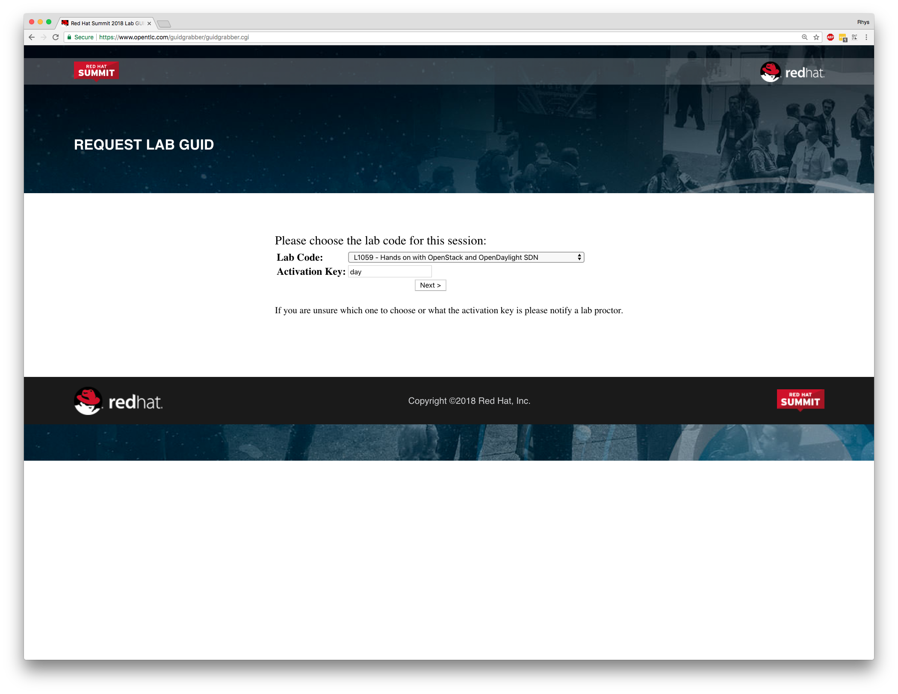
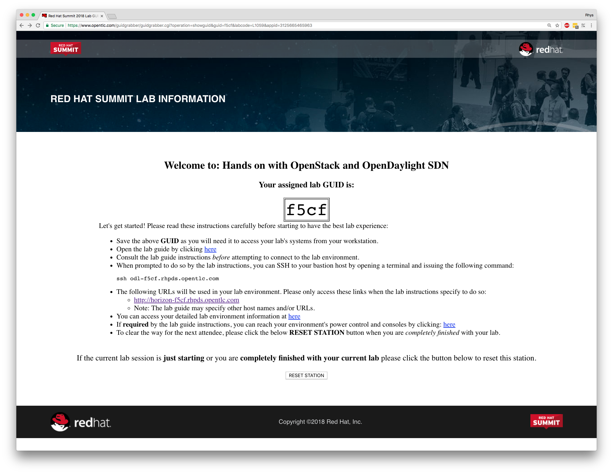
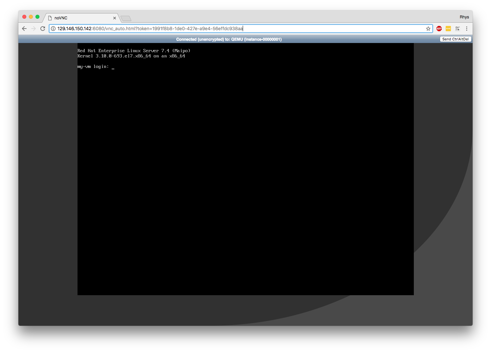
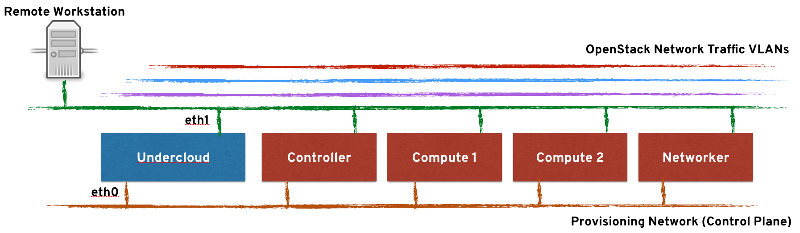

Title: Hands on with OpenStack and OpenDaylight SDN (L1059)
Date: 8th May 2018
Authors/Lab Owners:
First of all, it's my pleasure to welcome you to the Red Hat Summit 2018, here at the San Francisco Moscone Centre! The past few years have been an exciting time for Red Hat, and both the OpenStack and OpenDaylight communities; we've seen unprecedented interest and development in these new revolutionary technologies and we're proud to be at the heart of it all. Red Hat is firmly committed to the future of OpenStack and OpenDaylight; our goal is to continue to enhance the technology, make it more readily consumable and to enable our customers to be successful when using it.
This hands-on lab aims to get you, the attendees, a bit closer to both Red Hat OpenStack Platform and OpenDaylight, with a specific focus on both the usage and deployment integration, and will run through an investigation of a pre-built environment, how to use it including some troubleshooting steps, and then an investigation of how it's possible to specify and configure OpenDaylight as part of your Red Hat OpenStack Platform deployment. We will use a combination of command-line tools and interaction via the OpenStack Dashboard (Horizon).
Whilst you'll be asked to use and explore some fundamental components within OpenStack, you won't need to install OpenStack or OpenDaylight from scratch within this lab, we've provided a pre-installed OpenStack environment with OpenDaylight already integrated. The environment is comprised of one controller, one networker (where OpenDaylight runs), and two compute nodes. These machines will be virtual machines themselves, running on-top of a shared public cloud environment. You will have been provided with the necessary connection details on-screen and the first lab will demonstrate how to connect into the environment and how to get started with the lab sections.
NOTE: If you've not been provided with connection details or you do not see your unique session information on-screen, please ask and we'll ensure that access is provided.
If you have any problems at all or have any questions about Red Hat, our OpenStack distribution, or OpenDaylight, please put your hand-up and a lab moderator will be with you shortly to assist - we've asked many of our OpenStack networking experts to be here today, so please make use of their time. If you have printed materials, they're yours to take away with you, otherwise the online copy will be available for the foreseeable future; I hope that they'll be useful assets in your OpenStack endeavours.
This lab is comprised of two major components, split into individual sections:
NOTE: This lab has been written specifically to coincide with the launch of Red Hat OpenStack Platform 12 (based on upstream Pike), where OpenDaylight integration will be at technology preview status.
OpenDaylight, hosted by the Linux Foundation, is an open-source, open-standards based Software Defined Networking (SDN) implementation; one that is flexible, modular, and scalable. Being modular, it's comprised of many different sub-components or projects that combine together to create a comprehensive solution that addresses many different use-cases and requirements. The OpenDaylight community is vibrant and ever expanding with a wide variety of ecosystem partners, enabling innovation and integration at all levels.
Customers are choosing to implement SDN's for a number of different reasons; the majority of which have nothing to do with OpenStack at all. Many organisations are desiring a much more comprehensive, robust, flexible, and centralised networking management platform at the core of their business, enabling them to have a greater degree of control over their networking implementation, reducing silos of networking infrastructure whilst enabling scalability. But on-top of this, a true SDN provides programmability of the networking fabric, and should not be restricted to a single area of the business; it should span all (often heterogenous) infrastructure providers, including physical hardware, virtual infrastructure, virtual switches and the physical networking layers. There should be a holistic view of the entire networking infrastructure, with management and intelligence provided through open API's and optional graphical representations.
There are a large number of vendors working in this space to provide their own SDN implementations, some of which are open-source, but many are proprietary based; examples include Juniper Contrail, Nuage Networks, VMware NSX, and Cisco ACI. OpenDaylight is a community project with the backing of many different vendors, Red Hat included, to create a comprehensive open-source alternative without vendor lock-in. Its goal is to further the adoption and innovation of software-defined networking through the creation of a common, industry supported platform; one that can adapt to the requirements of applications deployed on-top of it, rather than having applications constrained by classical networking constructs. OpenDaylight itself is quite closely aligned with NFV (Network Function Virtualisation) adoption due the similarities that NFV has on compute virtualisation with SDN and network virtualisation; SDN drives on-demand deployment of virtual network services when, and where, they are needed.
OpenDaylight has been adopted as the core SDN implementation of the OPNFV community, as well as being positioned as a core-enabling technology for Telco/NFV customers for Red Hat. We have no current plans to productise OpenDaylight as a stand-alone product, but we'll be continuing to integrate it alongside Red Hat OpenStack Platform in the coming releases, where we'll be adding significant value to customers in these industry sectors with the features that they require for their implementations, such as comprehensive policy-driven control over networking, service-function chaining, and open-API's/standards for integration with existing datacentre investments. Red Hat will ensure that the components and modules that ship with OpenDaylight have been thoroughly tested for functionality, stability, and compatibility, ensuring that customers have an easy transition to an SDN environment should they want to.
The OpenDaylight architecture is modular and pluggable. It consists of a Northbound layer (usually where REST API based applications exist), the Model-Driven Service Abstraction Layer (MD-SAL) which is used to service the core database as well as RPCs and communication between Services and Applications, as well as the Southbound layer, which contains many plug-ins used to program and interact with the network forwarding fabric. The following diagram picture shows a simplified view of the typical OpenDaylight architecture:
The Red Hat OpenDaylight solution (part of the Red Hat OpenStack Platform) includes several Northbound plugins that provide things like authorisation (AAA), REST interface with Neutron (Neutron NB application), translating Neutron models to OpenFlow (NetVirt). NetVirt handles most of the complex logic of taking abstract Neutron network resources and translating it into OpenFlow/OVSDB based data models. In the future releases, more applications will be added to provide additional SDN/NFV functionality.
Most applications will only use a small subset of the available southbound plug-ins to control the data plane. The NetVirt application of the Red Hat OpenDaylight solution uses OpenFlow and Open vSwitch Database Management Protocol (OVSDB). The overview of the Red Hat OpenDaylight architecture is shown in the following diagram:

OpenStack Networking (Neutron) supports a plugin model that allows it to integrate with multiple different systems in order to implement networking capabilities for OpenStack. For the purpose of OpenStack integration, OpenDaylight exposes a single common northbound service, which is implemented by the Neutron Northbound component. The exposed API matches exactly the REST API of Neutron. This common service allows multiple Neutron providers to exist in OpenDaylight. As mentioned before, the Red Hat OpenDaylight solution is based on NetVirt as a Neutron provider for OpenStack. It is important to highlight that NetVirt consumes the Neutron API, rather than replacing or changing it.
The OpenDaylight plug-in for OpenStack Neutron is called networking-odl, and is responsible for passing the OpenStack network configuration into the OpenDaylight controller. The communication between OpenStack and OpenDaylight is done using the public REST APIs. This model simplifies the implementation on the OpenStack side, because it offloads most of the networking tasks onto OpenDaylight, which diminishes the processing burden for OpenStack. OpenDaylight directly programs the Open vSwitch (OVS) switches in the data center. This eliminates the need for most agents on every OpenStack node. For example, when using OpenDaylight there is no OVS agent or L3 agent on compute. This means less processes running on compute nodes, which frees up more resources on a per node basis and allows greater scalability within OSP. However, the Neutron DHCP agent is still used and exists on each OpenStack controller.
The OpenDaylight controller uses NetVirt, then configures Open vSwitch instances (which use the OpenFlow and OVSDB protocols), and provides the necessary networking environment. This includes Layer 2 networking, L3 distributed virtual routing (DVR), security groups, and so on. The OpenDaylight controller can maintain the necessary isolation among different tenants. In addition, NetVirt is also able to control hardware gateways using the OVSDB protocol. A hardware gateway is typically a top of rack (ToR) Ethernet switch, that supports the OVSDB hardware_vtep schema, and can be used to connect virtual machines with physical devices. These physical machines may span over multiple L3 domains but still be able to function as part of the same broadcast L2 domain as the virtual machines thanks to VXLAN tunneling overlay, which terminates at the HW VTEP switch. The traffic is then mapped to VLANs and sent to the appropriate physical machine; making it seem as if the VMs and physical machines were in the same L2 domain.
This section lists the key features available with OpenDaylight and Red Hat OpenStack Platform 12 release. Please skip ahead if you're already aware of these, or if you just want to have them as a reference for a later date.
Integration with Red Hat OpenStack Platform Director - The Red Hat OpenStack Platform director is a toolset for installing and managing a complete OpenStack environment. With Red Hat OpenStack Platform 12, director can deploy and configure OpenStack to work with OpenDaylight. OpenDaylight can run together with the OpenStack overcloud controller role, or as a separate custom role on a different node in several possible scenarios. In Red Hat Openstack Platform 12, OpenDaylight is installed and run in a container which provides more flexibility to its maintenance and use.
L2 Connectivity between OpenStack instances - OpenDaylight provides the required Layer 2 (L2) connectivity among VM instances belonging to the same Neutron virtual network. Each time a Neutron network is created by a user, OpenDaylight automatically sets the required Open vSwitch (OVS) parameters on the relevant compute nodes to ensure that instances, belonging to the same network, can communicate with each other over a shared broadcast domain.
While VXLAN is the recommended encapsulation format for tenant networks traffic, 802.1q VLANs are also supported. In the case of VXLAN, OpenDaylight creates and manage the virtual tunnel endpoints (VTEPs) between the OVS nodes automatically to ensure efficient communication between the nodes, and without relying on any special features on the underlying fabric (the only requirement from the underlying network is support for unicast IP routing between the nodes).
IP Address Management (IPAM) - VM instances get automatically assigned with an IPv4 address using the DHCP protocol, according to the tenant subnet configuration. This is currently done by leveraging the Neutron DHCP agent. Each tenant is completely isolated from other tenants, so that IP addresses can overlap.
NOTE: OpenDaylight can operate as a DHCP server. However, using the Neutron DHCP agent provides High Availability (HA) and support for VM instance metadata (cloud-init). Therefore Red Hat recommends to deploy the DHCP agent, rather than relying on OpenDaylight for such functionality at this time.
Routing between OpenStack networks - OpenDaylight provides support for Layer 3 (L3) routing between OpenStack networks, whenever a virtual router device is defined by the user. Routing is supported between different networks of the same project (tenant), which is also commonly referred to as East-West routing. OpenDaylight uses a distributed virtual routing paradigm, so that the packet forwarding and routing is done locally on each compute node and programmed directly into the switch dataplane.
Floating IPs - A floating IP is a 1-to-1 IPv4 address mapping between a floating address (on an external network) and the fixed IP address, assigned to the instance in the tenant network. Once a VM instance is assigned with a floating IP by the user, the IP is used for any incoming or outgoing external communication. Red Hat OpenStack Platform director includes a default template, where each compute role has external connectivity for floating IPs communication. These external connections support both flat (untagged) and VLAN based networks, and is a source of DNAT (Destination Network Address Translation).
Security Groups - OpenDaylight provides support for tenant configurable Security Groups that allow a tenant to control what traffic can flow in and out VM instances. Security Groups can be assigned per VM port or per Neutron network, and filter traffic based on TCP/IP characteristics such as IP address, IP protocol numbers, TCP/UDP port numbers and ICMP codes.
By default, each instance is assigned a default Security Group, where egress traffic is allowed, but all ingress traffic to the VM is blocked. The only exception is the trusted control-plane traffic such as ARP and DHCP. In addition, anti-spoofing rules are present, so a VM cannot send or receive packets with MAC or IP addresses that are unknown to Neutron. OpenDaylight also provides support for the Neutron port-security extension, that allows tenants to turn on or off security filtering on a per port basis. OpenDaylight implements the Security Groups rules within OVS in a stateful manner, by leveraging OpenFlow and conntrack.
IPv6 - IPv6 is an Internet Layer protocol for packet-switched networking and provides end-to-end datagram transmission across multiple IP networks, similarly to the previous implementation known as IPv4. The IPv6 networking not only offers far more IP addresses to connect various devices into the network, but it also allows to use other features that were previously not possible, such as stateless address autoconfiguration, network renumbering, and router announcements.
OpenDaylight in Red Hat OpenStack Platform 12 brings some feature parity in IPv6 use-cases with OpenStack Neutron. Some of the features that are supported in OpenDaylight include: IPv6 addressing support including stateless address autoconfiguration (SLAAC), DHCPv4 and DHCPv6 modes, IPv6 Security Groups along with allowed address pairs, IPv6 VM-to-VM communication in same network, IPv6 East-West routing, and Dual Stack (IPv4/IPv6) networks.
VLAN aware VMs - VLAN aware VMs (or VMs with trunking support) allows an instance to be connected to one or more networks over one virtual NIC (vNIC). Multiple networks can be presented to an instance by connecting it to a single port. Network trunking lets users create a port, associate it with a trunk, and launch an instance on that port. Later, additional networks can be attached to or detached from the instance dynamically without interrupting the instance’s operations.
The trunk typically provides a parent port, which the trunk is associated with, and can have any number of child ports (subports). When users want to create instances, they need to specify the parent port of the trunk to attach the instance to it. The network presented by the subport is the network of the associated port. The VMs see the parent port as an untagged VLANs and the child ports are tagged VLANs.
SNAT - SNAT (Source Network Address Translation) enables that virtual machines in a tenant network have access to the external network without using floating IPs. It uses NAPT (Network Address Port Translation) to allow multiple virtual machines communicating over the same router gateway to use the same external IP address.
Red Hat OpenStack Platform 12 introduces the conntrack based SNAT where it uses OVS netfilter integration where netfilter maintains the translations. One switch is designated as a NAPT switch, and performs the centralised translation role. All the other switches send the packet to centralised switch for SNAT. If a NAPT switch goes down an alternate switch is selected for the translations, but the existing translations will be lost on a failover.
OVS-DPDK - Open vSwitch is a multilayer virtual switch that uses the OpenFlow protocol and its OVSDB interface to control the switch. The native Open vSwitch uses the kernel space to deliver data to the applications. The kernel creates the so called flow table which holds rules to forward the passing packets. Packets that do not match any rule, usually the first packets are sent to an application in the user space for further processing. When the application (a daemon) handles the packet, it makes a record in the flow table, so that next packets could use a faster path. Thus, OVS can save a reasonable amount of time by by-passing the time consuming switching between the kernel and the applications. Such approach can still have limitations in the bandwidth of the Linux network stack, which is unsuitable for use cases that require to process a high rate of packets, such as telecommunications.
DPDK is a set of user space libraries that enable a user to build applications that can process the data faster. It offers several Poll Mode Drivers (PMDs), that enable the packets to pass the kernel stack and go directly to the user space. Such behaviour speeds up the communication remarkably, because it handles the traffic outside of the kernel space completely. OpenDaylight in Red Hat Openstack Platform 12 may be deployed with Open vSwitch Data Plane Development Kit (DPDK) acceleration with director. This deployment offers higher data plane performance as packets are processed in user space rather than in the kernel.
SR-IOV integration - The Single Root I/O Virtualisation (SR-IOV) specification is a standard for a type of PCI device assignment that can project a single networking device to multiple virtual machines and improve their performance. For example, SR-IOV enables a single Ethernet port to appear as multiple, separate, physical devices. A physical device with SR-IOV capabilities can be configured to appear in the PCI configuration space as multiple functions. Basically, SR-IOV distinguishes between Physical Functions (PFs) and Virtual Functions (VFs). PFs are full PCIe devices with SR-IOV capabilities. They provide the same functionality as usual PCI devices and can be assigned the VFs.
VFs are simple PCIe functions that derive from PFs. The number of Virtual Functions a device may have is limited by the device hardware. A single Ethernet port, the Physical Device, may map to many Virtual Functions that can be shared to virtual machines through the hypervisor. It maps one or more Virtual Functions to a virtual machine. Each VF can be mapped to a single guest at a time only, because it requires real hardware resources. A virtual machine can have more VFs. To the virtual machine, the VF appears as a usual networking card.
The main advantage is that the SR-IOV devices can share a single physical port with multiple virtual machines. Furthermore, the VFs have near-native performance and provide better performance than paravirtualised drivers and emulated access, and they provide data protection between virtual machines on the same physical server. OpenDaylight in Red Hat OpenStack Platform 12 can be deployed with compute nodes that support SR-IOV. It is also possible to create mixed environments with both OVS and SR-IOV nodes in a single OpenDaylight installation. The SR-IOV deployment requires the Neutron SR-IOV agent in order to configure the virtual functions (VFs), which are directly passed to the compute instance when it is deployed as a network port.
Controller clustering - High availability is the continued availability of a service even when individual systems providing it fail. There are a number of different ways of implementing high availability; one desirable feature shared by most is that whatever operations are involved in ensuring continuity of service are handled automatically by the system, without administrator involvement. Typically system administrators will be notified when systems fail, but won’t need to take action to keep the overall service operational; they will only need to take manual action to restore the entire system to its nominal configuration.
The OpenDaylight Controller in Red Hat OpenStack Platform supports a cluster based High Availability model. Several instances of the OpenDaylight Controller form a Controller Cluster and together, they work as one logical controller. The service provided by the controller, viewed as a logical unit, continues to operate as long as a majority of the controller instances are functional and able to communicate with each other. The Red Hat OpenDaylight Clustering model provides both High Availability and horizontal scaling: more nodes can be added to absorb more load, if necessary.
Hardware VXLAN VTEP (L2GW) - Layer 2 gateway services allow a tenant’s virtual network to be bridged to a physical network. This integration provides users with the capability to access resources on a physical server through a layer 2 network connection rather than via a routed layer 3 connection, that means extending the layer 2 broadcast domain instead of going through L3 or Floating IPs. To implement this, there is a need to create a bridge between the virtual workloads running inside an overlay (VXLAN) and workloads running in physical networks (normally using VLAN). This requires some sort of control over the physical top-of-rack (ToR) switch the physical workload is connected to. Hardware VXLAN Gateway (aka HW VTEP) can help with that.
HW VTEP (VXLAN Tunnel End Point) usually resides on the ToR switch itself and performs VXLAN encapsulation and de-encapsulation. Each VTEP device has two interfaces – one is a VLAN interface (facing the physical server) and the other is an IP interface to other VTEPs. The idea behind hardware VTEPs is to create an overlay network that connects VMs and physical servers and make them think that they’re in the same L2 network. Red Hat OpenStack customers can benefit from an L2GW to integrate traditional bare-metal services into a Neutron overlay. This is especially useful for bridging external physical workloads into a Neutron tenant network, BMaaS/Ironic for bringing a bare metal server (managed by OpenStack) into a tenant network, and bridging SR-IOV traffic into a VXLAN overlay; taking advantage of the line-rate speed of SR-IOV and the benefits of an overlay network to interconnect SR-IOV VMs.
The OpenStack environment that we're going to be using has been preinstalled and largely preconfigured (including OpenDaylight integration) for the purposes of this lab. We've done our best to preconfigure the classroom and ensure that the cloud-based virtual machines that make up the infrastruture are ready to go at the start of the lab, but we need to ensure that you're able to log in to the environment, as the workstation you're at will be used for multiple different labs during the Red Hat Summit.
The environment you're going to be using, despite running in the public cloud, has been deployed with OSP director, Red Hat's deployment and lifecycle management platform for OpenStack. As such, it's been deployed with the TripleO methodology, i.e. a smaller 'bootstrap' OpenStack cloud, known as the undercloud deploys the 'production' cloud known as the overcloud, i.e. where your workloads would actually run. The overcloud that has been deployed in the lab environment is a simple configuration, comprising of a single controller, single networker, and dual compute node setup. All of these nodes, the undercloud, and all overcloud nodes are virtual machines running within a unique session on-top of the public-cloud ready for your consumption, roughly looking like the following:

NOTE: In the above image you'll see the bastion host is the one that we'll be using as a jump host, i.e. the machine that we connect to first to establish a connection into the lab environment that we'll be using for the rest of the labs; this is the only virtual machine in your unique environment that has secure shell access exposed to the public internet.
In this lab, you won't be utilising the undercloud platform to deploy any overcloud infrastructure - this has already been done for you, but you will be using it as the base in which we carry out our labs. If you're interested in learning more, there's a lab tomorrow, L1010 (Hands on with Red Hat OpenStack Platform director) in the same room, which will allow you to configure and deploy OpenStack from scratch.
Using a virtualised infrastructure inside of the public cloud allows us to have full control over all of the network and storage without impacting other lab users, and whilst we won't be running any intensive workloads, it allows us to build up and test OpenStack in a short amount of time and with great flexibility. To re-iterate, we'll first be connecting to the jump host, and then further connecting to our undercloud machine as the conduit into our overcloud OpenStack environment. The undercloud will be used for both executing commands on the overcloud, and also as a conduit for connecting to our overcloud nodes and any deployed resources when required to do so.
A note on how these labs work - Note that when this lab guide asks you to execute a command, it will look like the following:
$ command-to-enter <args>
(output)Both the exact command to enter and the expected output will be shown (which may vary slightly within your environments, and may be trimmed down to reduce the size of the lab guide), so unless explicitly mentioned, you execute the steps described in such boxes. Please ask at any time if you require any assistance with this.
As previously highlighted, the workstation you're sat at will be used by many different lab sessions, yet each of you will have been allocated a unique environment based within the public cloud for you to use to complete the lab steps associated with each session. On screen you should already have a tab open to the lab request form where we need to select the correct lab. If you don't have this in front of you, it's available here.
What you should see is as follows, noting that I've already selected the correct lab ('L1059 - Hands-on with OpenStack and OpenDaylight SDN') and have entered the activation key 'day', which you will need to do too:

This will allocate a pre-deployed session for your usage with GUID that's used to uniquely identify your session, and will provide you with instructions on how to connect to the jumphost that we discussed above. Here's an example below:

You'll see that my assigned lab GUID is 'f5cf' and is used to uniquely identify my session, and is used as part of the connection address. Halfway down the page you'll see an ssh command that you'll need to use to connect to the environment. The environment takes around 20 minutes to power-up, and this should have already been done for you prior to the session starting, but don't be alarmed if you cannot connect in straight away, it may just require a few more minutes.
Use the exact connection address that it provides you on your screen by copying and pasting the text from the webpage into a terminal emulator, here I'm using my example but you'll need to replace this with your own:
$ ssh odl-f5cf.rhpds.opentlc.com
The authenticity of host 'odl-f5cf.rhpds.opentlc.com (129.146.91.32)' can't be established.
ECDSA key fingerprint is SHA256:SqbVF0TGdHuTsoDChp6/cw4jFHqwJlBWFOeqwd88Bi4.
Are you sure you want to continue connecting (yes/no)? yes
(...)NOTE: If you lose your connection details you can return here at any time.
Next, we can jump straight to our undercloud machine, as this is the one that we're going to be using for all of the lab sections, note that we're using sudo below as the root user on the jump host is the only one configured with the ssk-keys:
$ sudo ssh stack@undercloudOnly if this is unsuccessful (e.g. for some reason that there's no entry in /etc/hosts), attempt the following:
$ sudo ssh stack@192.168.122.253You will have full root access (via sudo) and control over this virtual machine, and we'll run our tasks directly here. If you're still unable to connect into your environment after a few minutes, please ask for assistance.
In this section we're going to take a brief look of the pre-deployed lab environment to see how it has been put together. Unfortunately due to the time taken to complete a deployment end-to-end, the lab authors decided that working with a pre-deployed environment made the most sense; a deployment typically takes between 30-60 minutes on normal hardware (depending on the configuration), and when we tested within the public cloud environment it took much longer. Therefore we're not actually going to be deploying OpenStack in this lab, that step has already been done for you, but we'll investigate the integration of OpenDaylight and OpenStack over the next couple of hours, and will also demonstrate how it could have been configured through TripleO (OSP director) later on at the end.
The lab environment has been configured to look like the following-
 There are six total machines, if you include the jump-host, that we'll be utilising. In a previous step we used the jump-host to connect into the undercloud (in blue), which is a small bootstrap OpenStack environment that's used to deploy the overcloud (in red). The overcloud has already been pre-deployed and already has OpenDaylight integrated, running on a dedicated 'networker' node. Sitting on-top of all of these systems are dedicated VLANs that are used to segment OpenStack network traffic, e.g. ensuring that internal API communication is isolated from tenant network traffic, and so on.
There are six total machines, if you include the jump-host, that we'll be utilising. In a previous step we used the jump-host to connect into the undercloud (in blue), which is a small bootstrap OpenStack environment that's used to deploy the overcloud (in red). The overcloud has already been pre-deployed and already has OpenDaylight integrated, running on a dedicated 'networker' node. Sitting on-top of all of these systems are dedicated VLANs that are used to segment OpenStack network traffic, e.g. ensuring that internal API communication is isolated from tenant network traffic, and so on.
Now that we've successfully connected from the public internet to the jump-host, and have used that to get into our undercloud machine, let's explore what the current setup looks like a little further. All steps, unless explicitly mentioned, will be executed as the 'stack' user on the undercloud machine; this is a non-privileged user account and will be used to perform all requirements of the lab sections - we will not need the root account, although you should have sudo access if you want to explore a bit further.
As highlighted previously, we're operating with two separate clouds here, both of which are running OpenStack; the undercloud and the overcloud; it's the undercloud that's used to bootstrap the overcloud. As such, getting access to each of these clouds requires the correct credentials and some parameters that specify where the relevant API's reside. Typically you'd only ever need to interact with the undercloud if you were deploying, updating, or deleting an overcloud, but we're going to demonstrate the base functionality of the undercloud here just to level-set on the architecture of the overcloud.
Upon initial installation of the undercloud (not covered in this lab), OSP director generates a file called 'stackrc'; this file resides in the stack user's home directory and is a source of environment variables that enable the OpenStack command line tools to execute commands against the undercloud itself. Then, by default, after an overcloud has been deployed by the undercloud, OSP director (through TripleO) creates a file called overcloudrc (and overcloudrc.v3), which essentially provides very similar information to stackrc, but instead of telling the OpenStack command line tooling to point at the undercloud, it points it at the overcloud.
So, to re-iterate, the undercloud machine provides access to two functioning OpenStack deployments - one as the "command and control" or bootstrap cloud running on that system, and the other as the "production" OpenStack environment running within the overcloud nodes. Access is provided by either the 'stackrc' file (for the undercloud), or 'overcloudrc' file for the overcloud. The file you source will affect which deployment you're issuing commands to. Let's take a look at these files.
Assuming that you're still connected to your undercloud machine as the stack user, you'll notice that these files are residing in stack's home directory, as we have both a functioning undercloud and overcloud. Let's first look at the stackrc file:
$ cat ~/stackrc
# Clear any old environment that may conflict.
for key in $( set | awk '{FS="="} /^OS_/ {print $1}' ); do unset $key ; done
NOVA_VERSION=1.1
export NOVA_VERSION
OS_PASSWORD=$(sudo hiera admin_password)
export OS_PASSWORD
OS_AUTH_TYPE=password
export OS_AUTH_TYPE
OS_AUTH_URL=http://172.16.0.1:5000/
export OS_AUTH_URL
OS_USERNAME=admin
OS_PROJECT_NAME=admin
COMPUTE_API_VERSION=1.1
# 1.34 is the latest API version in Ironic Pike supported by ironicclient
IRONIC_API_VERSION=1.34
OS_BAREMETAL_API_VERSION=$IRONIC_API_VERSION
OS_NO_CACHE=True
OS_CLOUDNAME=undercloud
export OS_USERNAME
export OS_PROJECT_NAME
export COMPUTE_API_VERSION
export IRONIC_API_VERSION
export OS_BAREMETAL_API_VERSION
export OS_NO_CACHE
export OS_CLOUDNAME
OS_IDENTITY_API_VERSION='3'
export OS_IDENTITY_API_VERSION
OS_PROJECT_DOMAIN_NAME='Default'
export OS_PROJECT_DOMAIN_NAME
OS_USER_DOMAIN_NAME='Default'
export OS_USER_DOMAIN_NAME
# Add OS_CLOUDNAME to PS1
if [ -z "${CLOUDPROMPT_ENABLED:-}" ]; then
export PS1=${PS1:-""}
export PS1=\${OS_CLOUDNAME:+"(\$OS_CLOUDNAME)"}\ $PS1
export CLOUDPROMPT_ENABLED=1
fiHere you can see that we set-up the username, password, and authentication URL that will give us everything we need to utilise the OpenStack client command line tools that you're no doubt already familiar with, but perhaps have never used them against a TripleO based OpenStack environment. There are also a large number of other environment variables that help set specific API versions to use, and make it clear which environment file has been sourced by overriding PS1.
So, let's make sure that our undercloud works, let's source this file (use this file as a source of environment variables):
$ source ~/stackrcNOTE: You'll note that your command line now shows "(undercloud)" before the command prompt to signify the cloud that you'll be executing commands against. But this isn't shown in the commands below.
Now attempt to grab an authentication token from our undercloud:
$ openstack token issue
+------------+-----------------------------------------------------------------------------------------------------------------------------------------------------------------------------------------+
| Field | Value |
+------------+-----------------------------------------------------------------------------------------------------------------------------------------------------------------------------------------+
| expires | 2018-04-17T00:09:02+0000 |
| id | gAAAAABa1QLeKwRwfspD-8WsK9SnwleYztJf9CF9WQyBzA4u37TQL2HRz1KW8N0aHqvL2WD6Y8MAmOvtc6QFkc-aLpizdDf-lUD3UEvvMAoZ5ir3hx5sCcpKh975D344qWhb2j_eAFbEXw0dO79tFXaQ15iC4jHgnqnYSvsyZl51_eUfK8LhDT4 |
| project_id | 4978efb1e94543c09196b23ca79e0443 |
| user_id | 7246b17734a242a29fa3bc2149af2b10 |
+------------+-----------------------------------------------------------------------------------------------------------------------------------------------------------------------------------------+NOTE: The token that is issued to you will be fully privileged - there's a key differentiation between the local Linux user (being a non-privileged account) and the user that we're authenticating as within OpenStack. This source file contains credentials for the 'admin' user within the undercloud, and has no restrictions.
The vast majority of the TripleO functionality is now built into the OpenStack client tools, and can typically be invoked by either 'openstack undercloud <command>' or 'openstack overcloud <command>', depending on the cloud that needs to be actioned, although certain components may need to be interrogated individually.
As OSP director (via TripleO) controls bare-metal hardware to use as a base for the overcloud deployment, we can verify connectivity by asking it for the current list of hardware being used:
$ openstack baremetal node list
+--------------------------------------+--------------------+--------------------------------------+-------------+--------------------+-------------+
| UUID | Name | Instance UUID | Power State | Provisioning State | Maintenance |
+--------------------------------------+--------------------+--------------------------------------+-------------+--------------------+-------------+
| acfc2f77-adb2-4c25-b89e-8628d8debeae | summit-controller1 | b57eef5c-860c-43a3-9a66-77e6e592298f | power on | active | False |
| a5c6c2ba-57d4-40c6-a3c6-86271d1479ff | summit-compute1 | 673c2bc2-8680-46c6-8b03-e3eeb3cff98f | power on | active | False |
| 9622d2c1-947e-428f-a63e-e2d45c4a564d | summit-compute2 | 9d431a30-1738-421e-933b-5f357dce6fcc | power on | active | False |
| 1d70281d-1fb7-4828-90c2-c0003f98eb7c | summit-networker1 | 68545239-2fac-4348-8968-d1e6d42d05e6 | power on | active | False |
+--------------------------------------+--------------------+--------------------------------------+-------------+--------------------+-------------+Here you can see all of the overcloud nodes from the image we showed earlier on - all four overcloud machines with their power state as 'power on' and a provision status as 'active', signifying that these systems are on, and being used - and we know they are, as they're our overcloud itself.
Now we're ready to move onto our overcloud itself; we won't need to worry about the 'stackrc' file from now on as we're not going to be deploying OpenStack or making any changes to the existing configuration; using it was only to display how the undercloud is managing the hardware that makes up our overcloud. From now on we'll use the overcloudrc file, as it will allow us to interact with, and investigate the pre-deployed overcloud environment. Getting access to that environment is as easy as sourcing the overcloudrc file:
$ source ~/overcloudrcNow, instead of the commands going to the undercloud, the commands will go to the overcloud, or more specifically, the OpenStack controller(s) running there. You should also notice that the command prompt will have updated to demonstrate that we're interactiving with the overcloud.
Now, let's briefly list out the current set of services that are offered by the overcloud; this will allow us to verify connectivity to our overcloud, and that our overcloudrc file is providing us with everything we need to do so:
$ openstack service list
+----------------------------------+------------+----------------+
| ID | Name | Type |
+----------------------------------+------------+----------------+
| 011cbcb8ec59472f986226fe42ee4a09 | placement | placement |
| 1af179a63e3f4411b080accd8c4eae77 | cinderv3 | volumev3 |
| 25e3ec7de8ea4c498aed1d90684104b1 | keystone | identity |
| 2b8e5d7341014ede93e28c0366205868 | heat-cfn | cloudformation |
| 36733da763024e6dbcc8d700f9644b85 | gnocchi | metric |
| 6106a390fe994022bd904152832ea45c | ceilometer | metering |
| 6bba6fea02b54bacb54c68a5379032b0 | cinderv2 | volumev2 |
| 7008b8e0bbfc42bd8132d684e3adc749 | neutron | network |
| 9d39cc71feb54138af6c061198f5f94c | nova | compute |
| b0c67504cfad4322ae797451dbabc567 | aodh | alarming |
| ba933279a0a34d399a6e2d36f68212f8 | cinder | volume |
| c3369e4a285d469794e1ae231cb4fa4f | heat | orchestration |
| c51021ec815c44a08fa3aa4370dd4622 | panko | event |
| d83434146a8c497d8dc5525d8e9ccf92 | glance | image |
| dc7cc4f3d155495caced459ef120c8e7 | swift | object-store |
+----------------------------------+------------+----------------+And one way to absolutely verify that we're talking to the overcloud and not the overcloud is to check on the endpoints for a given service. Our fixed virtual IP for our OpenStack services on the external network (routable from the undercloud) is 192.168.122.100:
$ openstack endpoint show neutron
+--------------+----------------------------------+
| Field | Value |
+--------------+----------------------------------+
| adminurl | http://172.17.1.15:9696 |
| enabled | True |
| id | 9359b04363a14d1987fbc4f8fed643b9 |
| internalurl | http://172.17.1.15:9696 |
| publicurl | http://192.168.122.100:9696 | <--- see here.
| region | regionOne |
| service_id | 7008b8e0bbfc42bd8132d684e3adc749 |
| service_name | neutron |
| service_type | network |
+--------------+----------------------------------+In addition to these files you'll find a 'labs' directory within the stack user's home directory. This will contain a number of different files that we'll be using over the next few lab sections, including all of the OSP director templates that were used for deployment. As we have a number of different OpenStack labs going on during the Red Hat Summit that our team have prepared, the same shared directory is available on all systems:
$ ls -l ~/labs
total 564048
-rw-rw-r--. 1 stack stack 13267968 Feb 10 2017 cirros-0.3.5-x86_64-disk.img
drwxrwxr-x. 2 stack stack 97 Mar 26 01:20 config
drwxrwxr-x. 3 stack stack 71 Mar 25 20:07 director
-rw-r--r--. 1 stack stack 1071 Mar 25 20:07 instackenv.json
drwxrwxr-x. 3 stack stack 77 Mar 25 20:07 odl
drwxrwxr-x. 3 stack stack 172 Mar 25 20:07 osp
-rw-rw-r--. 1 stack stack 564330496 Mar 22 07:38 rhel-server-7.4-x86_64-kvm.qcow2Don't worry about exploring for now, just know that we have these available for us.
So far, all we've done is take a basic look at what the architecture looks like; we've not deployed any resources, we've not looked into the OpenDaylight integration, and we certainly don't know if it's even working yet. Right now you're going to have to trust us that it has been configured properly, but we'll start testing that right away.
In this section we're going to be verifying the environment to ensure that it first of all functions properly, but secondly adheres to a well-integrated OpenDaylight setup. The first thing we should do is make sure that OpenStack itself is working; let's build out some resources within our overcloud environment.
As part of the lab, we'll use an image already residing on the filesystem for you; this is a stripped down version of RHEL 7.4 with a pre-set root password; we'll upload it as our own. Let's verify that the disk image is as expected and has the correct properties:
$ qemu-img info ~/labs/rhel-server-7.4-x86_64-kvm.qcow2
image: /home/stack/labs/rhel-server-7.4-x86_64-kvm.qcow2
file format: qcow2
virtual size: 10G (10737418240 bytes)
disk size: 538M
cluster_size: 65536
Format specific information:
compat: 0.10
refcount bits: 16Next we can create a new image within Glance and import its contents, it may take a few minutes to copy the data. Let's ensure that we've sourced our overcloudrc file (noting that it doesn't matter if you've already sourced this file - repeating the source command is safe), and proceed with the image creation:
$ source ~/overcloudrc
$ openstack image create rhel7 --public \
--disk-format qcow2 --container-format bare \
--file ~/labs/rhel-server-7.4-x86_64-kvm.qcow2
+------------------+------------------------------------------------------------------------------+
| Field | Value |
+------------------+------------------------------------------------------------------------------+
| checksum | 2065a01cacd127c2b5f23b1738113325 |
| container_format | bare |
| created_at | 2018-04-16T20:49:39Z |
| disk_format | qcow2 |
| file | /v2/images/2650782f-e95c-4309-b041-49f79468413d/file |
| id | 2650782f-e95c-4309-b041-49f79468413d |
| min_disk | 0 |
| min_ram | 0 |
| name | rhel7 |
| owner | c14b205e428e43319fe43fb0396bd092 |
| properties | direct_url='swift+config://ref1/glance/2650782f-e95c-4309-b041-49f79468413d' |
| protected | False |
| schema | /v2/schemas/image |
| size | 564330496 |
| status | active |
| tags | |
| updated_at | 2018-04-16T20:49:49Z |
| virtual_size | None |
| visibility | public |
+------------------+------------------------------------------------------------------------------+This may take a minute or so, but you can verify that the image is active and ready:
$ openstack image list
+--------------------------------------+-------+--------+
| ID | Name | Status |
+--------------------------------------+-------+--------+
| 2650782f-e95c-4309-b041-49f79468413d | rhel7 | active |
+--------------------------------------+-------+--------+Next we're going to need a flavor for our environment; as we're relatively resource constrained the out of the box flavors don't quite give us what we need, so let's create an additional flavor for us to use:
$ openstack flavor create --ram 2048 --disk 10 --vcpus 2 --id 6 m1.labs
+----------------------------+---------+
| Field | Value |
+----------------------------+---------+
| OS-FLV-DISABLED:disabled | False |
| OS-FLV-EXT-DATA:ephemeral | 0 |
| disk | 10 |
| id | 6 |
| name | m1.labs |
| os-flavor-access:is_public | True |
| properties | |
| ram | 2048 |
| rxtx_factor | 1.0 |
| swap | |
| vcpus | 2 |
+----------------------------+---------+A little bit of background given that this is a networking lab...
When it comes to OpenStack Networking there are many different types of networks to consider; first you have the infrastructure networks where OpenStack services communicate across, where storage data is transferred, and how administrators connect to the machines, and then you have the instance networks, i.e. those networks that users can attach their workloads onto. These networks also come in all different shapes and sizes, depending on the use-case, e.g. whether instances are directly connected to an existing datacentre network (e.g. provider networks), whether they use high performance configurations such as SR-IOV or DPDK, or whether they use the default tenant networking model.
Tenant networks provide fully granular control of networking inside of each tenant, i.e. each tenant can create networks, have control over the subnet allocation, and provide additional services such as DHCP without requiring administrative access. Tenant networks are isolated from one another using either overlay technologies such as VXLAN, or via traditional isolation mechanisms such as VLAN, with the assignment and configuration of each type being automated by the OpenStack components. The problem with tenant networks is that they are inherently isolated networks that have no outbound or inbound connectivity - they’re designed to provide networking access between instances residing within said tenant.
To provide routing both ingress and egress to that tenant network requires the attachment of a virtual router, controlled by the chosen OpenStack Networking plugin (in our case OpenDaylight) where said router will, by default, provide SNAT capabilities to allow egress traffic. On-top of this, the virtual router can provide DNAT capabilities for ingress traffic through the concept of a floating-IP, which is attached on a 1:1 basis to an instance, allowing NAT based communication from an external routed network into the tenant network.
In a vanilla OpenStack configuration (e.g. one that uses ML2/OVS), this routing mechanism takes place on either dedicated networker nodes, or via the OpenStack controller nodes themselves in a centralised configuration, which can cause potential bottlenecks in performance as all North/South traffic goes through a centralised set of nodes. But with OpenDaylight, the responsibility for DNAT/SNAT resides with the compute node hosting said virtual machine. SNAT is implemented by using conntrack (part of Linux Netfilter suite) to track connections and then Netfilter entries handle NAT translation.
We're going to use the default tenant network model in this lab with distributed routing on our compute nodes through an external network that we're going to define. We'll create these networks here and investigate how they're constructed and enabled through OpenDaylight later on. We're using the provider network extension to advise Neutron on the logical network mapping (i.e. how the external network is physically attached on the underlying nodes); we'll explore this later too.
First define the external network:
$ openstack network create external --external \
--provider-physical-network datacentre \
--provider-network-type flat
+---------------------------+--------------------------------------+
| Field | Value |
+---------------------------+--------------------------------------+
| admin_state_up | UP |
| availability_zone_hints | |
| availability_zones | |
| created_at | 2018-04-18T12:52:01Z |
| description | |
| dns_domain | None |
| id | 642f4496-7773-4d17-8f82-52fe8efc2a62 |
| ipv4_address_scope | None |
| ipv6_address_scope | None |
| is_default | False |
| is_vlan_transparent | None |
| mtu | 1500 |
| name | external |
| port_security_enabled | True |
| project_id | c14b205e428e43319fe43fb0396bd092 |
| provider:network_type | flat | <--- Note the 'flat' type
| provider:physical_network | datacentre | <--- Note the 'datacentre' mapping
| provider:segmentation_id | None |
| qos_policy_id | None |
| revision_number | 4 |
| router:external | External |
| segments | None |
| shared | False |
| status | ACTIVE |
| subnets | |
| tags | |
| updated_at | 2018-04-09T14:10:16Z |
+---------------------------+--------------------------------------+ There are a number of key parameters here, for reference use the table below:
| Parameter | Details |
|---|---|
| --provider-physical-network | This defines the logical physical network name that OpenDaylight uses to map this virtual network to a physical network on the compute host |
| --provider-network-type | This sets the network type, e.g. if it's flat, or VLAN tagged |
| --external | This tells Neutron that this is an external network and can be used for routing (e.g. floating IP's) |
Let's associate a subnet to our external network so that Neutron knows what IP ranges to use for outbound routing (SNAT) and inbound routing via floating IP's (DNAT), noting that this coincides with the network we have routing access from our undercloud machine:
$ openstack subnet create external_subnet --network external \
--subnet-range 192.168.122.0/24 \
--allocation-pool start=192.168.122.200,end=192.168.122.249 \
--no-dhcp --dns-nameserver 192.168.122.1 --gateway 192.168.122.1
+-------------------------+--------------------------------------+
| Field | Value |
+-------------------------+--------------------------------------+
| allocation_pools | 192.168.122.200-192.168.122.249 |
| cidr | 192.168.122.0/24 |
| created_at | 2018-04-18T12:52:05Z |
| description | |
| dns_nameservers | 192.168.122.1 |
| enable_dhcp | False |
| gateway_ip | 192.168.122.1 |
| host_routes | |
| id | f771130a-227d-4945-b836-8f80f970a20f |
| ip_version | 4 |
| ipv6_address_mode | None |
| ipv6_ra_mode | None |
| name | external_subnet |
| network_id | 642f4496-7773-4d17-8f82-52fe8efc2a62 |
| project_id | c14b205e428e43319fe43fb0396bd092 |
| revision_number | 0 |
| segment_id | None |
| service_types | |
| subnetpool_id | None |
| tags | |
| updated_at | 2018-04-18T12:52:05Z |
| use_default_subnet_pool | None |
+-------------------------+--------------------------------------+As previously, there are a number of key parameters here, for reference use the table below:
| Parameter | Details |
|---|---|
| --subnet-range | This defines the CIDR of the network that we're wanting to create |
| --allocation-pool | This sets the range of IP's within the CIDR that we can use to allocate as floating IP's, or to use as SNAT IP's |
| --no-dhcp | This disables any form of DHCP service for this network - this is an external network that we use for bridging traffic between internal and external networks. In this lab, instances cannot be directly connected to the external network without routing (NAT) taking place via the L3 agent, although it is possible to establish this type of alternative configuration. Therefore, as instances won't be DHCP'ing on this network, we disable this functionality. |
| --dns-nameserver | This defines the nameserver that instances can use, although this is not required as it's provided only when DHCP is enabled. It's shown here for completeness. |
| --gateway | This defines the upstream network gateway for the external network, i.e. the next-hop that would be used within that external network. |
Now that we've got the external network configured we need to create internal networks for our instances as they won't have direct access to this network. This is the responsibility of a user within a project, the external network is just exposed to all of the projects that are created; whilst they cannot modify it, they can attach a virtual router to it for routing and floating IP access.
If we create a network and don't specify any additional parameters, Neutron assumes that it's a private tenant network that uses some form of network isolation mechanism (to isolate tenant networks between other projects) such as VLAN, or VXLAN. In our environment we're defaulting to VXLAN:
$ openstack network create internal
+---------------------------+--------------------------------------+
| Field | Value |
+---------------------------+--------------------------------------+
| admin_state_up | UP |
| availability_zone_hints | |
| availability_zones | |
| created_at | 2018-04-18T13:13:02Z |
| description | |
| dns_domain | None |
| id | 22f9a9cd-1da0-4c6a-a815-d25da07aa18d |
| ipv4_address_scope | None |
| ipv6_address_scope | None |
| is_default | False |
| is_vlan_transparent | None |
| mtu | 1450 |
| name | internal |
| port_security_enabled | True |
| project_id | c14b205e428e43319fe43fb0396bd092 |
| provider:network_type | vxlan | <--- Note the 'vxlan' type
| provider:physical_network | None |
| provider:segmentation_id | 3 |
| qos_policy_id | None |
| revision_number | 3 |
| router:external | Internal |
| segments | None |
| shared | False |
| status | ACTIVE |
| subnets | |
| tags | |
| updated_at | 2018-04-09T14:11:53Z |
+---------------------------+--------------------------------------+NOTE: As we're using VXLAN, it's assumed that we're using the default frame size of 1500bytes, and has automatically reduced the MTU given to instances to 1450 to accomodate the VXLAN header.
Next, associate a subnet with this network as before, but using a completely different subnet CIDR:
$ openstack subnet create internal_subnet --network internal \
--subnet-range 172.16.1.0/24 --dns-nameserver 192.168.122.1
+-------------------------+--------------------------------------+
| Field | Value |
+-------------------------+--------------------------------------+
| allocation_pools | 172.16.1.2-172.16.1.254 |
| cidr | 172.16.1.0/24 |
| created_at | 2018-04-18T13:13:09Z |
| description | |
| dns_nameservers | 192.168.122.1 |
| enable_dhcp | True |
| gateway_ip | 172.16.1.1 |
| host_routes | |
| id | 8146d9b3-8c97-436c-88df-3b3cd88ec54f |
| ip_version | 4 |
| ipv6_address_mode | None |
| ipv6_ra_mode | None |
| name | internal_subnet |
| network_id | 22f9a9cd-1da0-4c6a-a815-d25da07aa18d |
| project_id | c14b205e428e43319fe43fb0396bd092 |
| revision_number | 0 |
| segment_id | None |
| service_types | |
| subnetpool_id | None |
| tags | |
| updated_at | 2018-04-18T13:13:09Z |
| use_default_subnet_pool | None |
+-------------------------+--------------------------------------+ This means that any instances that we start on this internal network will receive an IP address (via DHCP) on the 172.16.1.0/24 network, noting that by default, Neutron assumes that you want to have DHCP enabled, and will automatically assign an address to use for the default gateway (this will be the address that the L3 agent uses as a gateway for NAT).
At the moment, any instances attached to this network will be completely isolated; there's no routing between the internal and the external network - despite having a gateway defined we cannot get out, and we cannot get in. Neutron allows you to bridge tenant networks and external networks via virtual routers, and is what gets implemented by the OpenDaylight in a distributed function to perform such capabilities. Let's create a virtual router for our network:
$ openstack router create demo_router
+-------------------------+--------------------------------------+
| Field | Value |
+-------------------------+--------------------------------------+
| admin_state_up | UP |
| availability_zone_hints | None |
| availability_zones | None |
| created_at | 2018-04-18T13:13:18Z |
| description | |
| distributed | False |
| external_gateway_info | None |
| flavor_id | None |
| ha | False |
| id | fa88e28a-34c4-4b8e-8c33-b67e54c4c9c0 |
| name | demo_router |
| project_id | c14b205e428e43319fe43fb0396bd092 |
| revision_number | None |
| routes | |
| status | ACTIVE |
| tags | |
| updated_at | 2018-04-18T13:13:18Z |
+-------------------------+--------------------------------------+ Now let's associate a gateway for this router, in other words, to which external network do we want outbound traffic to route through? That'll be our 'external' network...
$ openstack router set demo_router --external-gateway externalThen we need to add an interface to the internal network that we created in a previous step, noting that we need to associate it to the subnet, and not the network (as a network may have multiple subnets associated with it):
$ openstack router add subnet demo_router internal_subnetNOTE: The above two commands produce no output unless there have been any errors.
In conclusion, we've created a private 'tenant network', called 'internal' for our instances to use and have created a virtual router for our internal network to route traffic to the outside; onto the administratively defined external network called "external".
Next, boot a new instance on OpenStack using our new flavor, the internal tenant network, and the image we uploaded earlier ("rhel7"), ensuring that you specify a name for the instance, below we use "my_vm":
$ openstack server create --flavor m1.labs --image rhel7 --network internal my_vm
+-------------------------------------+----------------------------------------------+
| Field | Value |
+-------------------------------------+----------------------------------------------+
| OS-DCF:diskConfig | MANUAL |
| OS-EXT-AZ:availability_zone | |
| OS-EXT-SRV-ATTR:host | None |
| OS-EXT-SRV-ATTR:hypervisor_hostname | None |
| OS-EXT-SRV-ATTR:instance_name | |
| OS-EXT-STS:power_state | NOSTATE |
| OS-EXT-STS:task_state | scheduling |
| OS-EXT-STS:vm_state | building |
| OS-SRV-USG:launched_at | None |
| OS-SRV-USG:terminated_at | None |
| accessIPv4 | |
| accessIPv6 | |
| addresses | |
| adminPass | X5txyyS2yZDy |
| config_drive | |
| created | 2018-04-18T13:20:15Z |
| flavor | m1.labs (6) |
| hostId | |
| id | 5d24c6de-2d4d-42d6-bcd0-52dd2770de69 |
| image | rhel7 (81ff217a-38c5-4275-9ad4-f77a10e2a08b) |
| key_name | None |
| name | my_vm |
| progress | 0 |
| project_id | c14b205e428e43319fe43fb0396bd092 |
| properties | |
| security_groups | name='default' |
| status | BUILD |
| updated | 2018-04-18T13:20:15Z |
| user_id | 1f474841c896452592072710e97d9ddc |
| volumes_attached | |
+-------------------------------------+----------------------------------------------+We can verify that our system has been started successfully with the following command, noting that it may take a few minutes to become active:
$ openstack server list
+--------------------------------------+-------+--------+---------------------+-------+---------+
| ID | Name | Status | Networks | Image | Flavor |
+--------------------------------------+-------+--------+---------------------+-------+---------+
| 5d24c6de-2d4d-42d6-bcd0-52dd2770de69 | my_vm | ACTIVE | internal=172.16.1.7 | rhel7 | m1.labs |
+--------------------------------------+-------+--------+---------------------+-------+---------+NOTE: You may see that the system is in a "SPAWNING" state for a few minutes, this is to be expected as the machine provisions itself. Please be patient and allow it to start. We want to make sure that it goes into an "ACTIVE" state.
As highlighted above, our launched instance is only on the internal network and has no connectivity from the outside world. We'll request a floating IP for our instance on the external network:
$ openstack floating ip create external
+---------------------+--------------------------------------+
| Field | Value |
+---------------------+--------------------------------------+
| created_at | 2018-04-18T13:35:49Z |
| description | |
| fixed_ip_address | None |
| floating_ip_address | 192.168.122.200 |
| floating_network_id | 642f4496-7773-4d17-8f82-52fe8efc2a62 |
| id | 4965c561-c97e-48c0-b89e-7f9064d399f6 |
| name | 192.168.122.200 |
| port_id | None |
| project_id | c14b205e428e43319fe43fb0396bd092 |
| revision_number | 0 |
| router_id | None |
| status | DOWN |
| updated_at | 2018-04-18T13:35:49Z |
+---------------------+--------------------------------------+ You can see that it's reserved 192.168.122.200 for our project, although it's not attached to an instance yet and therefore is not much use. Next, we can assign our claimed IP address to an instance:
$ openstack server add floating ip my_vm 192.168.122.200 NOTE: If the command is successful it has no output, and your IP address may vary from the one displayed above - use the IP address that the create command allocated to you.
You can now verify that the IP address was assigned to your node with the following:
$ openstack server list
+--------------------------------------+-------+--------+--------------------------------------+-------+---------+
| ID | Name | Status | Networks | Image | Flavor |
+--------------------------------------+-------+--------+--------------------------------------+-------+---------+
| 5d24c6de-2d4d-42d6-bcd0-52dd2770de69 | my_vm | ACTIVE | internal=172.16.1.7, 192.168.122.200 | rhel7 | m1.labs |
+--------------------------------------+-------+--------+--------------------------------------+-------+---------+NOTE: It may take a while for the floating IP to show up here, so keep trying the above command.
For those of you that may have already tried to ping or SSH into the node using this IP address may be confused as to why this is not working. By default, OpenStack's security group rules will prevent all inbound access, so we'll need to open these up before we confirm that our instance is working properly.
By default, OpenStack Security Groups prevent any inbound access to instances, including ICMP/ping. Therefore, we have to edit the security group policy to ensure that the firewall is opened up for us.
Let's add two rules, firstly for all instances to have ICMP and SSH access. By default, Neutron ships with a 'default' security group, it's possible to create new groups and assign custom rules to these groups and then assign these groups to individual servers. For this lab, we'll just configure the default group. The problem is that there are multiple default groups, and as an administrator you can see them all, noting that they're project-specific. We need to first connect the admin project to the correct security group, first by getting the correct project ID:
$ export MY_PROJECT=$(openstack project list | awk '$4 == "admin" {print $2};')
$ export SEC_GROUP_ID=$(openstack security group list | grep $MY_PROJECT | awk '{print $2;}')This should now show you the correct security group ID:
$ echo $SEC_GROUP_ID
2641d918-579b-4acd-8fbf-894f4e7be241
$ openstack security group list -c ID -c Project
+--------------------------------------+----------------------------------+
| ID | Project |
+--------------------------------------+----------------------------------+
| 2641d918-579b-4acd-8fbf-894f4e7be241 | c14b205e428e43319fe43fb0396bd092 |
| 9d1ac5cf-52da-4de7-a082-f10e7db88c71 | b86d79c73e604feab8ced0a46fe9738b |
| bf70f47e-4c58-4372-81e2-5d38e14e3ec6 | |
+--------------------------------------+----------------------------------+So, let's look at enabling ICMP within the default group, using the security group ID as the unique identifier for our 'default' group within the admin project that we're using (and that our instance is booted onto):
$ openstack security group rule create --proto icmp $SEC_GROUP_ID
+-------------------+--------------------------------------+
| Field | Value |
+-------------------+--------------------------------------+
| created_at | 2018-04-18T13:59:15Z |
| description | |
| direction | ingress |
| ether_type | IPv4 |
| id | 8671ae28-b52a-4afa-b02b-2a632d55daf6 |
| name | None |
| port_range_max | None |
| port_range_min | None |
| project_id | c14b205e428e43319fe43fb0396bd092 |
| protocol | icmp |
| remote_group_id | None |
| remote_ip_prefix | 0.0.0.0/0 |
| revision_number | 0 |
| security_group_id | 2641d918-579b-4acd-8fbf-894f4e7be241 |
| updated_at | 2018-04-18T13:59:15Z |
+-------------------+--------------------------------------+Within a few seconds (for the hypervisor to pick up the changes) you should be able to ping your floating IP:
$ $ ping -c4 192.168.122.200
PING 192.168.122.200 (192.168.122.200) 56(84) bytes of data.
64 bytes from 192.168.122.200: icmp_seq=1 ttl=64 time=1.67 ms
64 bytes from 192.168.122.200: icmp_seq=2 ttl=64 time=0.857 ms
64 bytes from 192.168.122.200: icmp_seq=3 ttl=64 time=0.802 ms
(...)We can ping, but we can't SSH yet, as that's still not allowed by default. Let's try adding another rule, to allow SSH access for all instances in the 'default' group:
$ openstack security group rule create --proto tcp --dst-port 22:22 $SEC_GROUP_ID
+-------------------+--------------------------------------+
| Field | Value |
+-------------------+--------------------------------------+
| created_at | 2018-04-18T14:00:36Z |
| description | |
| direction | ingress |
| ether_type | IPv4 |
| id | 7e514f09-780c-4a70-97bd-14ecf24fb529 |
| name | None |
| port_range_max | 22 |
| port_range_min | 22 |
| project_id | c14b205e428e43319fe43fb0396bd092 |
| protocol | tcp |
| remote_group_id | None |
| remote_ip_prefix | 0.0.0.0/0 |
| revision_number | 0 |
| security_group_id | 2641d918-579b-4acd-8fbf-894f4e7be241 |
| updated_at | 2018-04-18T14:00:36Z |
+-------------------+--------------------------------------+Let's quickly verify connectivity.. (The root password is 'redhat')
$ ssh root@192.168.122.200
The authenticity of host '192.168.122.200 (192.168.122.200)' can't be established.
ECDSA key fingerprint is SHA256:maBYZmeAY6go1ynwTpoZ8o3kjWPgzuePT/6QDXe95rY.
ECDSA key fingerprint is MD5:d3:f4:3d:dc:26:78:44:b2:0a:f1:ee:72:d8:a0:35:d1.
Are you sure you want to continue connecting (yes/no)? yes
Warning: Permanently added '192.168.122.200' (ECDSA) to the list of known hosts.
Password:
[root@my-vm ~]#When you see the "[root@my-vm ~]#" prompt, you're connected into your instance successfully. Check the network configuration within the instance, note that it is not aware of the "192.168.122.200" address - this is being NAT'd by the L3 agent from the outside external network:
[root@my-vm ~]# ip address show eth0
2: eth0: <BROADCAST,MULTICAST,UP,LOWER_UP> mtu 1450 qdisc pfifo_fast state UP qlen 1000
link/ether fa:16:3e:8e:25:34 brd ff:ff:ff:ff:ff:ff
inet 172.16.1.7/24 brd 172.16.1.255 scope global dynamic eth0
valid_lft 84123sec preferred_lft 84123sec
inet6 fe80::f816:3eff:fe8e:2534/64 scope link
valid_lft forever preferred_lft foreverPress "Ctrl+d", or simply type "exit" to return to your OpenStack environment:
[root@my-vm ~]# exit
Connection to 192.168.122.200 closed.
$It's critical to ensure that our virtual machine has started successfully. Nova provides us with two main ways of checking this without relying on networking being available - the console output, and the VNC console output. Using a web-browser, we can view the VNC console via an HTML5 viewer. We can get the URL via the following command:
$ openstack console url show my_vm --novnc
+-------+--------------------------------------------------------------------------------------+
| Field | Value |
+-------+--------------------------------------------------------------------------------------+
| type | novnc |
| url | http://129.146.150.142:6080/vnc_auto.html?token=1991f8b8-1de0-427e-a9e4-56effdc938aa |
+-------+--------------------------------------------------------------------------------------+WARNING: You may find that if you run the above command before the machine has booted, you'll receive the following error. Simply wait a minute or two for the instance to boot.
$ openstack console url show my_vm --novnc
ERROR: Instance not yet ready (HTTP 409) (Request-ID: req-da372916-10ba-4158-91a2-0cc10f4d083e)You should be able to open this URL directly from your workstation and view the VM's VNC console; you can also login should you wish, the root password is 'redhat'.

This section is not essential, but you may want to verify that you can access the Horizon dashboard for your environment; let's open up a web-browser and ensure that it shows all of our resources that we just built up. The URL for this can be found on the lab's landing page which can be found here, see the hyperlink in the middle that looks like this - http://horizon-REPL.rhpds.opentlc.com/dashboard (where REPL is your GUID that was allocated to you when we started), once opened you should see the following:

To login, you'll need to get the automatically generated password from the recently created ~/overcloudrc file (your password will be different to the output shown below):
undercloud$ egrep -i '(username|password)' ~/overcloudrc
export OS_USERNAME=admin
export OS_PASSWORD=jZJVX3D4xZaKeDJPfWs8CEBUB
export OS_AUTH_TYPE=passwordMake sure you select the 'Project' tab at the top of the screen, as it should take you to the 'Identity' tab by default as we're doing everything as the 'admin' user. Feel free to play around with the OpenStack deployment if you've got plenty of time to spare. We can refer back to the web dashboard at a later step where required.
So far, all we've tested is basic OpenStack functionality, albeit configuring some of the basic networking, so in theory OpenDaylight and its connectivity to Neutron is functioning as expected, but we haven't actually done anything OpenDaylight specific; we would have likely had the exact same functionality with any OpenStack Networking implementation.
Let's explore the current configuration to verify OpenDaylight integration, and how we can investigate how it all fits together. First let's ask OpenStack for a list of networking agents and services that are running within our environment:
$ openstack network agent list
+--------------------------------------+----------------+-------------------------------+-------------------+-------+-------+------------------------------+
| ID | Agent Type | Host | Availability Zone | Alive | State | Binary |
+--------------------------------------+----------------+-------------------------------+-------------------+-------+-------+------------------------------+
| 1f9dbb3d-17fc-45dd-9a45-861bdef48c6f | DHCP agent | summit-networker.localdomain | nova | :-) | UP | neutron-dhcp-agent |
| 23e8b46a-bce0-4a94-a8ba-277aa60ed971 | ODL L2 | summit-networker.localdomain | None | :-) | UP | neutron-odlagent-portbinding |
| 4350636f-26f6-42b0-a942-640939a48972 | Metadata agent | summit-networker.localdomain | None | :-) | UP | neutron-metadata-agent |
| b4238dec-1f8d-4b7b-84bd-ed5ffbecee79 | ODL L2 | summit-controller.localdomain | None | :-) | UP | neutron-odlagent-portbinding |
| b4c9fa0b-8c30-46b0-accf-22aff4f2a145 | ODL L2 | summit-compute1.localdomain | None | :-) | UP | neutron-odlagent-portbinding |
| f0730552-2bcc-45e9-8ac0-6248359b8cca | ODL L2 | summit-compute2.localdomain | None | :-) | UP | neutron-odlagent-portbinding |
+--------------------------------------+----------------+-------------------------------+-------------------+-------+-------+------------------------------+What you'll see is that we have three systems that have networking functions, the 'summit-networker' machine, and the 'summit-computeX' machines; the controller is shown above as it also has ODL enabled by default, which it doesn't actually need if you're running dedicated networker nodes like we are.
First thing to note is that the networker provides some additional capabilities - DHCP and Metadata. On each of these nodes you'll also see 'ODL-L2' running, but how is this possible when earlier we stated that OpenDaylight removes the need for any agents other than DHCP/Metadata, and directly programs Open vSwitch? The answer is these are not real agents; they are in fact called pseudo-agents. The networking-odl driver is reading configuration provided by OpenDaylight about each OpenStack node, and then entering it into the Neutron Agent DB as an agent for ML2. This information is used to select the node for ML2 port binding (binding a Neutron port to a physical host). But where does OpenDaylight get this configuration from? This is a good time to take a look at the Open vSwitch configuration on a node:
$ ssh root@summit-compute1 ovs-vsctl list open_vswitch
_uuid : 9aa34a4e-efdf-4b9f-98dc-089b71506c97
bridges : [2180eb91-09d5-44dd-b084-ad042340b15e, ac6193d6-f3b5-4ea5-9a97-9445a2beac7e]
cur_cfg : 23
datapath_types : [netdev, system]
db_version : "7.15.0"
external_ids : {hostname="summit-compute1.localdomain", "odl_os_hostconfig_config_odl_l2"="{ \"supported_vnic_types\": [{ \"vnic_type\": \"normal\", \"vif_type\": \"ovs\", \"vif_details\": {} }], \"allowed_network_types\": [\"local\",\"vlan\",\"vxlan\",\"gre\"], \"bridge_mappings\": {\"datacentre\":\"br-ex\"}}", odl_os_hostconfig_hostid="summit-compute1.localdomain", system-id="62467b46-8d0c-4124-803f-640e77034668"}
iface_types : [geneve, gre, internal, lisp, patch, stt, system, tap, vxlan]
manager_options : [ace09c13-2d72-4372-8394-548b2575f6ed, d1d2e151-b7f1-4900-ab10-61391cf34ed8]
next_cfg : 23
other_config : {local_ip="172.17.2.16", provider_mappings="datacentre:br-ex"}
ovs_version : "2.7.3"
ssl : []
statistics : {}
system_type : rhel
system_version : "7.4"Let's examine the above output. The 'other_config' section lists 'local_ip', this is source IP that VXLAN based network overlay will use as the source IP for its tunnel. The 'provider_mappings' works the same way as Neutron bridge mappings and provides the mapping for logical to physical networks on this host.
Additionally look at 'external_ids'. The 'odl_os_hostconfig_config_odl_l2' section contains more information (some duplicate for legacy reasons) which indicates what kind of ports this node supports (vhostuser DPDK, or normal OVS VIF ports), the allowed network types on this node, etc. This information is read by OpenDaylight using the OVSDB protocol and eventually propagated by networking-odl into the Neutron Agent DB. Note, in Red Hat OpenStack Platform 12 when a port binding event occurs, networking-odl automatically sets the port to Active state. Typically in port binding a port should get created in Neutron then a ML2 port binding will execute a bind call to the driver (in this case ODL) who will verify the port is bound on the correct host. In Red Hat OpenStack Platform 13, there is support for a new web-socket based connection which runs over port 8185 between OpenDaylight and Neutron. This allows OpenDaylight to update the port state to Active once it sees the port created on the compute node and bound correctly to the virtual Neutron network.
The ODL-L2 agent configures the connections for OVSDB and OpenFlow, and are configured within Open vSwitch; each is described below:
| Connection Type | Host/Port Number | Description |
|---|---|---|
| ODL Southbound OVSDB | odl-controller:6640 | OVSDB is used to manage switch configuration. While OpenFlow (see below) allows us to configure the datapath table of a switch, we also need a protocol to allow configuration of ports, bridges and other settings on the switch. OVSDB gives us that ability to do switch configuration management, and this connection is used by OpenDaylight to program the local Open vSwitch. |
| ODL Southbound OpenFlow | odl-controller:6653 | OpenFlow is a protocol that was designed with SDN in mind. In the network data path it is represented as a list of rules that determine how packets are forwarded. The concept of a rule is broken down into 'match' criteria (to match on a packet) and then an 'action' (what to do with the packet). The control plane side of OpenFlow allows a centralised OpenFlow controller (such as ODL) to push these rules into remote switches and control datapath forwarding throughout a network from a centralised controller. This connection is how OpenDaylight configures the flows of the local Open vSwitch. |
| Local OVSDB Connection | localhost:6639 | This is configured by Director as the local port to run OVSDB Server on. By default OVSDB Server runs on port 6640, but since that port is taken by ODL on the control nodes, we reconfigure the local OVSDB server to use 6639. This port is what Neutron's DHCP agent uses to configure OVS with DHCP ports. Note that all nodes are configured with this, regardless of whether the DHCP agent is started. |
If we look at the Open vSwitch configuration on our summit-networker machine we can see how all of this has been configured. To do this, we'll need to briefly ssh to that machine and output the entire configuration; this is annotated below:
$ ssh root@summit-networker ovs-vsctl show
60ccb669-1eb9-4097-b915-8f02ac6f46e3
Manager "ptcp:6639:127.0.0.1" <--- Local OVSDB Server listener (DHCP)
Manager "tcp:172.17.1.16:6640" <--- ODL Southbound OVSDB
is_connected: true
Bridge br-ex <--- the br-ex OVS bridge
fail_mode: standalone
Port br-ex-int-patch
Interface br-ex-int-patch
type: patch
options: {peer=br-ex-patch}
Port "vlan101" <--- additional VLAN interfaces
tag: 101 for other OpenStack traffic
Interface "vlan101" e.g. storage/internal API networks
type: internal
Port "eth1" <--- physical eth1 nic
Interface "eth1"
Port "vlan201"
tag: 201
Interface "vlan201"
type: internal
Port br-ex
Interface br-ex
type: internal
Bridge br-int <--- integration bridge
Controller "tcp:172.17.1.16:6653" <--- ODL Southbound OpenFlow
is_connected: true
fail_mode: secure
Port br-int
Interface br-int
type: internal
Port "tape42503b6-de" <--- DHCP agent TAP device
Interface "tape42503b6-de"
type: internal
Port "tun86ef5582407" <--- VXLAN tunnel endpoint
Interface "tun86ef5582407" to a compute node
type: vxlan
options: {key=flow, local_ip="172.17.2.20", remote_ip="172.17.2.19"} <--- local_ip from OVS configuration
Port br-ex-patch
Interface br-ex-patch
type: patch
options: {peer=br-ex-int-patch}
ovs_version: "2.7.3"NOTE: We don't need to specify a password to execute remote commands on the networker node - we've already pre-populated the overcloud nodes with a secure shell key for convenience, but you may have to accept the key.
NOTE: Tunnel devices are created when required rather than establishing a full mesh network, hence why the output above only shows a single connection to one of our compute nodes, and not the other one. Recall that we only have one instance running, and it would have been scheduled upon one of those nodes, not both.
In addition, you'll also note that bridge "br-ex" is already attached to a real world physical network interface, "eth1". The important thing to understand here is that Neutron only understands logical "physical network" names - these logical network names are translated into real underlying networks via a network bridge by the plugin that we're using (in our case, OpenDaylight). To understand how this works, we need to look at the defined logical networks that OVS/OpenDaylight is exposing to Neutron via the 'bridge_mappings' extension. Select the 'id' for the ODL-L2 pseudo agent on 'summit-networker' in the following command, and it will show you the current bridge mappings:
$ openstack network agent show 23e8b46a-bce0-4a94-a8ba-277aa60ed971 -f json | grep -A2 bridge_mappings
"bridge_mappings": {
"datacentre": "br-ex"
}What this shows it that we have a physical network name of "datacentre", which if used, would tell Neutron to route all external traffic for that network onto the Open vSwitch bridge "br-ex". Recall that when we created our external network, we defined it as using the 'datacentre' logical network, hence the mapping here. To re-iterate, when we defined our external network with the Neutron logical name "datacentre", the traffic utilises "eth1" as a physical network via the Open vSwitch bridge "br-ex".
Let's now explore how Neutron is communicating with OpenDaylight, showing that through the ML2 interface Neutron networks are represented within OpenDaylight and are then implemented within the Open vSwitch configuration on the relevant nodes. For this, we need to query the OpenDaylight REST API and ask it for a list of networks. By default, the OpenDaylight controller as deployed by TripleO is not accessible from the external or public network, but is available on both the control plane network and the internal API network within the overcloud. These endpoints, like many other OpenStack services, are maintained by the HA Proxy configuration on the overcloud controller.
Let's first get the control plane virtual IP address so we know how to contact our OpenDaylight controller, for this we can request a list from the undercloud, making sure that you've sourced your stackrc (undercloud) environment file, not the overcloud one:
undercloud$ source ~/stackrc
undercloud$ openstack stack output show overcloud VipMap
+--------------+------------------------------------------------------------------------+
| Field | Value |
+--------------+------------------------------------------------------------------------+
| description | Mapping of each network to VIP addresses. Also includes the Redis VIP. |
| output_key | VipMap |
| output_value | { |
| | "storage": "172.17.3.13", |
| | "management_uri": "", |
| | "internal_api_subnet": "", |
| | "ctlplane": "172.16.0.23", |
| | "storage_uri": "172.17.3.13", |
| | "management": "", |
| | "management_subnet": "", |
| | "redis": "172.17.1.10", |
| | "storage_subnet": "", |
| | "storage_mgmt_uri": "172.17.4.19", |
| | "tenant_uri": "", |
| | "external": "192.168.122.100", |
| | "storage_mgmt": "172.17.4.19", |
| | "tenant": "", |
| | "tenant_subnet": "", |
| | "ctlplane_uri": "172.16.0.23", |
| | "external_subnet": "", |
| | "storage_mgmt_subnet": "", |
| | "internal_api": "172.17.1.15", |
| | "internal_api_uri": "172.17.1.15", |
| | "external_uri": "192.168.122.100", |
| | "ctlplane_subnet": "172.16.0.23/24" |
| | } |
+--------------+------------------------------------------------------------------------+In my environment, it's been allocated the IP address 172.16.0.23 (ctlplane), but your environment will very likely be different. We could have fixed this during the deployment, but we've opted to minimise the complexity of the templates. Let's export this as an environment variable, making sure that you use the IP address that was selected for your environment.
undercloud$ export CTLPLANE=172.16.0.23Next, let's call the REST API for OpenDaylight and ask it for a list of Neutron networks, noting that the default username and password is 'admin/admin':
undercloud$ curl -u admin:admin http://$CTLPLANE:8081/controller/nb/v2/neutron/networks
{
"networks" : [ {
"id" : "642f4496-7773-4d17-8f82-52fe8efc2a62",
"tenant_id" : "c14b205e428e43319fe43fb0396bd092",
"project_id" : "c14b205e428e43319fe43fb0396bd092",
"revision_number" : 3,
"name" : "external", <-- our 'external' network
"admin_state_up" : true,
"status" : "ACTIVE",
"shared" : false,
"router:external" : true,
"provider:network_type" : "flat",
"provider:physical_network" : "datacentre",
"segments" : [ ]
}, {
"id" : "bd8db3a8-2b30-4083-a8b3-b3fd46401142",
"tenant_id" : "bd8db3a82b304083a8b3b3fd46401142",
"project_id" : "bd8db3a8-2b30-4083-a8b3-b3fd46401142",
"name" : "Sync Canary Network",
"admin_state_up" : false,
"status" : "ACTIVE",
"shared" : false,
"router:external" : false,
"provider:network_type" : "flat",
"segments" : [ ]
}, {
"id" : "22f9a9cd-1da0-4c6a-a815-d25da07aa18d",
"tenant_id" : "c14b205e428e43319fe43fb0396bd092",
"project_id" : "c14b205e428e43319fe43fb0396bd092",
"revision_number" : 2,
"name" : "internal", <-- our 'internal' network
"admin_state_up" : true,
"status" : "ACTIVE",
"shared" : false,
"router:external" : false,
"provider:network_type" : "vxlan",
"provider:segmentation_id" : "30",
"segments" : [ ]
} ]
}You should see three networks listed, the VXLAN-based internal tenant network called "internal" and the external network called "external", both of which we created earlier, that's used for floating IP access and external routing (noting that it's associated to the flat "datacentre" physical network), and you'll note that the ID's also match up (remember to source the ~/overcloudrc file again):
$ source ~/overcloudrc
$ openstack network list -c ID -c Name
+--------------------------------------+----------+
| ID | Name |
+--------------------------------------+----------+
| 22f9a9cd-1da0-4c6a-a815-d25da07aa18d | internal |
| 642f4496-7773-4d17-8f82-52fe8efc2a62 | external |
+--------------------------------------+----------+And then a third network called the "Sync Canary Network". The canary network is a dummy network used as a placeholder, created by the ML2 OpenDaylight service as a mechanism to check whether we're in a consistent state between OpenDaylight and Neutron. More specifically, if this network has been removed, it's assumed that the OpenDaylight network database has been dropped, and it will trigger a full re-sync between Neutron and OpenDaylight to ensure consistency. The fact that these networks are known by OpenDaylight, aside from the fact that we've validated that basic networking is working, prove that Neutron is able to successfully communicate with the OpenDayight SDN controller.
In this section we're going to take a look at the OpenDaylight controller itself; where it runs, how you can connect into it, query it for information, and what functions are available. In our model the OpenDaylight controller runs on our dedicated networker machine, so let's hop over to it:
$ ssh root@summit-networkerNOTE: If the following commands are prefixed with "networker#" it signifies that the commands are to be executed on the summit-networker machine and not the undercloud.
Now we can connect to the OpenDaylight management command-line console, which runs over secure shell. This listens on port 8101 on the nodes running an instance of the OpenDaylight controller:
networker# netstat -tunpl | grep 8101
tcp6 0 0 :::8101 :::* LISTEN 2190/javaBut it's actually running in a Docker container (in OSP12+ the vast majority of OpenStack services are now containerised as opposed to installed as standard RPM's and managed through systemd) but we'll explore this a bit further later on:
networker# docker ps -a | grep opendaylight
60e5bba8875e 172.16.0.1:8787/rhosp12/openstack-opendaylight:12.0-20180319.1 "kolla_start" 3 weeks ago Up 10 hours opendaylight_apiLet's connect into this console from the networker node itself (password is 'karaf'):
networker# ssh karaf@localhost -p 8101
Password authentication
Password:
________ ________ .__ .__ .__ __
\_____ \ ______ ____ ____ \______ \ _____ ___.__.| | |__| ____ | |___/ |_
/ | \\____ \_/ __ \ / \ | | \\__ \< | || | | |/ ___\| | \ __\
/ | \ |_> > ___/| | \| ` \/ __ \\___ || |_| / /_/ > Y \ |
\_______ / __/ \___ >___| /_______ (____ / ____||____/__\___ /|___| /__|
\/|__| \/ \/ \/ \/\/ /_____/ \/
Hit '<tab>' for a list of available commands
and '[cmd] --help' for help on a specific command.
Hit '<ctrl-d>' or type 'system:shutdown' or 'logout' to shutdown OpenDaylight.
opendaylight-user@root>Here, we can run some additional commands to inspect the current networking status. Let's start with seeing whether we can match the Open vSwitch configuration setup for our VXLAN-based tunnel network endpoints to the structure that OpenDaylight knows about:
opendaylight$ vxlan:show
Name Description
Local IP Remote IP Gateway IP AdmState
OpState Parent Tag
--------------------------------------------------------------------------------
tund35bcb4915e VXLAN Trunk Interface
172.17.2.19 172.17.2.20 0.0.0.0 ENABLED
UP 215658939848679/tund35bcb4915e 7
tun86ef5582407 VXLAN Trunk Interface
172.17.2.20 172.17.2.19 0.0.0.0 ENABLED
UP 97146301947967/tun86ef5582407 8As you can see, this matches the output shown in Open vSwitch, remembering that the only nodes that have networking connectivity at the moment are the networker to the first compute node that's running our instance. If we were to launch an additional instance, it's likely that this would be extended to accommodate connectivity to the second compute node.
Next, another basic command we can use is to list the NAPT switches/routers that are used to perform SNAT functionality for instances that do not have floating IP's, noting that the router ID will match the Neutron router ID that we created earlier in the lab:
opendaylight$ odl:display-napt-switches
Router Id Datapath Node Id Managment Ip Address
-------------------------------------------------------------------------------------------
fa88e28a-34c4-4b8e-8c33-b67e54c4c9c0 233871321246373 172.17.2.16The IP address of the NAPT switch, 172.17.2.16, is the IP address of a compute node where OpenDaylight has deployed a virtual router to perform the SNAT functionality, allowing us to have distributed routing and is using conntrack to manage it. Note that it's not currently possible to have highly-available SNAT routers with the OpenDaylight integration.
Let's quit out of our OpenDaylight controller and return to our undercloud machine for now:
opendaylight$ (Ctrl-D, or 'logout')
Connection to localhost closed.
networker# exit
Connection to 172.16.0.25 closed.Many of the OpenStack-specific implementations don't have an equivalent Karaf console command that we can use, and therefore we sometimes have to use the REST API like we did to query the networks earlier. Let's check the floating IP mappings that are being used as an example:
undercloud$ $ curl -s -u admin:admin \
http://$CTLPLANE:8081/restconf/config/odl-nat:floating-ip-info | \
python -m json.tool
{
"floating-ip-info": {
"router-ports": [
{
"external-network-id": "642f4496-7773-4d17-8f82-52fe8efc2a62",
"ports": [
{
"internal-to-external-port-map": [
{
"external-id": "4965c561-c97e-48c0-b89e-7f9064d399f6",
"external-ip": "192.168.122.200",
"internal-ip": "172.16.1.7"
}
],
"port-name": "bcc0f8b1-9450-4e7d-b19f-0d0d0e1942f4"
}
],
"router-id": "fa88e28a-34c4-4b8e-8c33-b67e54c4c9c0"
}
]
}
}Here we have our floating IP matching our instance IP, as demonstrated through the Neutron API too:
$ openstack floating ip show 192.168.122.200
+---------------------+--------------------------------------+
| Field | Value |
+---------------------+--------------------------------------+
| created_at | 2018-04-18T13:35:49Z |
| description | |
| fixed_ip_address | 172.16.1.7 | <--- "internal-ip"
| floating_ip_address | 192.168.122.200 | <--- "external-ip"
| floating_network_id | 642f4496-7773-4d17-8f82-52fe8efc2a62 |
| id | 4965c561-c97e-48c0-b89e-7f9064d399f6 |
| name | 192.168.122.200 |
| port_id | bcc0f8b1-9450-4e7d-b19f-0d0d0e1942f4 |
| project_id | c14b205e428e43319fe43fb0396bd092 |
| revision_number | 1 |
| router_id | fa88e28a-34c4-4b8e-8c33-b67e54c4c9c0 |
| status | ACTIVE |
| updated_at | 2018-04-18T13:36:33Z |
+---------------------+--------------------------------------+As you can see, there are a number of different ways of interacting with OpenDaylight; Neutron can provide a direct route to a lot of the data, but this gets translated into OpenDaylight specific constructs by the ML2 OpenDaylight implementation. It's then the responsibility of OpenDaylight to program the local Open vSwitch implementations at each node that requires it.
Red Hat OpenStack Platform, as per the default configuration in OSP12 and beyond, utilises containers for the vast majority of the OpenStack services. OpenDaylight is no exception here, and as such, on our dedicated networker node the OpenDaylight SDN Controller runs within a docker container. If you ever need to access the container where OpenDaylight is running, e.g. if it's not running correctly and the API access is not sufficient, then there are a number of different ways you can interact with it.
Firstly, you can query the logs that the container is producing. For this you need to make sure that you're connected to the host that's running our OpenDaylight controller:
undercloud$ ssh root@summit-networker
networker# # docker ps -a
CONTAINER ID IMAGE COMMAND CREATED STATUS PORTS NAMES
34e2e1a71f09 172.16.0.1:8787/rhosp12/openstack-cron:12.0-20171129.1 "kolla_start" 15 hours ago Up 15 hours logrotate_crond
3e94f63b3068 172.16.0.1:8787/rhosp12/openstack-opendaylight:12.0-20171129.1 "kolla_start" 15 hours ago Up 15 hours opendaylight_apiHere you'll see that this host is only running two containers - recall that this is actually a very simple role that just runs OpenDaylight in a container; with OSP12, all other OpenStack networking services are not yet containerised, primarily to allow third party vendors that provide networking solutions can have some time to move over to the docker packaging format. To verify, you can demonstrate that Neutron's DHCP service is still managed by systemd:
networker# systemctl status neutron-dhcp-agent.service
● neutron-dhcp-agent.service - OpenStack Neutron DHCP Agent
Loaded: loaded (/usr/lib/systemd/system/neutron-dhcp-agent.service; enabled; vendor preset: disabled)
Active: active (running) since Wed 2018-04-18 12:21:15 UTC; 10h ago
Main PID: 24284 (neutron-dhcp-ag)
Memory: 102.9M
CGroup: /system.slice/neutron-dhcp-agent.service
├─24284 /usr/bin/python2 /usr/bin/neutron-dhcp-agent --config-file /usr/share/neutron/neutron-dist.conf --config-file /etc/neutron/neutron.conf --config-file /etc/neutron/dhcp_agent...
├─92414 sudo neutron-rootwrap-daemon /etc/neutron/rootwrap.conf
├─92415 /usr/bin/python2 /usr/bin/neutron-rootwrap-daemon /etc/neutron/rootwrap.conf
├─92486 dnsmasq --no-hosts --no-resolv --strict-order --except-interface=lo --pid-file=/var/lib/neutron/dhcp/1e357bee-87e5-4074-b87a-a418778b99e8/pid --dhcp-hostsfile=/var/lib/neutr...
└─92488 haproxy -f /var/lib/neutron/ns-metadata-proxy/1e357bee-87e5-4074-b87a-a418778b99e8.confGoing back to the OpenDaylight container, to view the logs you simply need to use the 'docker logs' command, with the ID of the container provided from the list we got earlier:
networker# docker logs 3e94f63b3068
(...)NOTE: The above output is removed simply due to its verbosity. But this can be used to track down startup issues, or any issues that may be logged, helping you troubleshoot any problems.
Let's say that you get this far and you want to go a little deeper; it's possible to attach into a container to execute commands from within the container, interacting with all namespaces associated with that container:
networker# docker exec -it 3e94f63b3068 /bin/bash
tput: No value for $TERM and no -T specified
tput: No value for $TERM and no -T specified
container# export TERM=xtermNOTE: We export $TERM to help the console output properly, as without this you may find that viewing configuration files or log files is very difficult.
Now you can view the processes, for example, for that namespace, and have direct access to log files, configuration files, and anything that the container requires, as if it was running on the baremetal host:
container# ps -ax
PID TTY STAT TIME COMMAND
1 ? Ssl 77:33 /usr/bin/java -Djava.security.properties=/opt/opendaylight/etc/odl.java.security -server -Xms128M -Xmx2048m -XX:+UnlockDiagnosticVMOptions -XX:+UnsyncloadClass -XX:+H
45476 ? Ss 0:00 /bin/bash
45530 ? R+ 0:00 ps -axIt's just as easy to disconnect from the container when required:
container# exit
networker# exit
Connection to 172.16.0.25 closed.
undercloud$In this section we're going to be looking at how we can utilise OSP director (through TripleO) to deploy an OpenStack overcloud with integrated OpenDaylight, and we'll look at the customisations available with the TripleO heat templates. We already have a pre-deployed environment available to us, but we'll remove this and go through all of the steps to configure and kick-off a new deployment. Unfortunately it's not likely that you'll see the deployment successfully complete given the time constraints of this lab, but at a very minimum you should be able to understand the flows and how the deployment is started.
Let's first remove/clean-up the existing deployment and reset our environment, remembering that we now have to use the undercloud and as such must source the ~/stackrc file:
$ source ~/stackrcNow we can ask the undercloud to remove the existing overcloud stack:
$ openstack stack delete overcloud
Are you sure you want to delete this stack(s) [y/N]? yesNOTE: This process will take a few minutes so we'll let it process the removal in the background and move on.
Support for the deployment and integration of OpenDaylight has been available within TripleO for a number of releases, and is fully composable like all other OpenStack services, i.e. it can be deployed within any existing role, or a brand new role (e.g. a dedicated networker). Since OSP12, OpenStack services (with the exception of a few core components) are containerised, and are deployed as immutable containers across a set of hosts; OpenDaylight is no exception here, although TripleO currently supports the option of deploying it as a legacy service ("puppet" based) or as a container ("docker" based).
We're going to be using the containerised OpenDaylight service in our new deployment, which means that we do not need to install any software in the default RHEL image that OpenStack Ironic rolls out during the node deployment phase. The next few steps are going to walk you through the following tasks:
Much of the OpenDaylight requirements are very similar to a standard OpenStack networking experience, and therefore the implementations and configuration options do not differ too much between the two.
Since OSP10 (based on OpenStack Newton), OSP director supports composable roles - this allows organisations to break down the legacy OpenStack roles, such as a controller, into individual services and build up custom roles to suit their requirements. This could be as simple as combining a compute and a storage role to create a hyperconverged configuration, or perhaps fragmenting the monolithic controller role to split out some of the services to enable a greater degree of scalability. Historically, all networking services were provided by the controllers; now we have a choice about where the networking services should operate. As part of this section we're going to demonstrate how we can utilise composable roles to choose how, and where, to deploy the OpenDaylight services.
We're going to be creating a dedicated networker role, in which all OpenStack networking related services, including the OpenDaylight controller, will reside. For us to understand how this works we must first explore the TripleO heat templates that dictate and control the role structure, and then we'll look to make some minor modifications to suit our desired configuration.
The templates that are fed into Heat are dynamically generated at deployment time through Jinja2 templates based on the roles that are defined by the administrator. If no custom role information is supplied it will use the default configuration residing at /usr/share/openstack-tripleo-heat-templates/roles_data.yaml, which lists all of the individual OpenStack services (and supporting functions) that it needs to deploy for each of the listed roles. By either modifying this file (not recommended) or supplying a customised role information file at deployment time, one can dynamically define new roles and specify the services in which it will be associated with.
Inside of this file it's possible to both create new roles dynamically, or simply move services between the existing role structures that are already well understood. In our environment we're going to be pulling the networking functions (including OpenDaylight) out of the controller and placing them into a new role called "Networker". For this, we can use TripleO to generate some of the role definitions for us. Let's first make a directory that we'll use to hold all of our customised templates:
$ mkdir -p ~/templates/
$ cd ~/templates/Next, let's generate a new custom roles file, specifying the three main roles that we want to cover, i.e. a "Controller", a "Compute", and a "Networker"; noting that TripleO already has the construct of a dedicated networker node available, so it knows which services to allocated into this role:
$ openstack overcloud roles generate \
Controller Compute Networker -o ~/templates/lab_roles.yamlSo how does this differ from the standard configuration? Well, firstly, the TripleO concept of a networker node is very slightly different from what we're trying to achieve with our deployment. Namely, the default TripleO networker role still assumes that we want the OpenDaylight SDN controller itself to reside within the controller role, but for the purposes of this exercise we're going to move this to our dedicated networker role, along with all Neutron based services except the Neutron API server, which is best left on the controller.
For this, we need to move the service called "OS::TripleO::Services::OpenDaylightApi" from the controller, along with all Neutron agents to the networker role, so OSP director knows that it needs to put it them on the networker and not the controller nodes. Let's make this change, first by removing the instance of 'OpenDaylightApi' from the controller role, noting that as there's only one we can use a simple sed command:
$ sed -i /OpenDaylightApi/d ~/templates/lab_roles.yamlNow we can add that service to the end of the file as the Networker role is at the bottom of the custom roles file and it's a list of services, noting that whitespace is very important here to ensure the hierarchy of the yaml formatted file:
undercloud$ echo " - OS::TripleO::Services::OpenDaylightApi" \
>> ~/templates/lab_roles.yaml
undercloud$ echo " - OS::TripleO::Services::NeutronCorePlugin" \
>> ~/templates/lab_roles.yamlNow, we need to remove all Neutron services/agents/daemons (with the exception of Neutron API and the Neutron Core Plugin service, something used to configure Neutron's API server to talk to the chosen plugin) from the controller. TripleO, via the roles file generation tool, has already ensured that the networker node has these roles already satisfied.
Next, edit the file, and remove all lines containing "OS::TripleO::Services:Neutron" from the Controller block.
You can use your favourite text editor for this...
$ vi ~/templates/lab_roles.yamlYou'll need to remove these services (by simply deleting the line in the file):
But don't remove the following services:
If you're not comfortable modifying these files yourself, and just want to proceed past this, you can copy the pre-built file that we've made available for you, note that you should only execute the following command if you just want the easy ride here:
$ cp ~/labs/odl/templates/custom_roles.yaml ~/templates/lab_roles.yamlWhat we're saying here is that the following services have been moved from the controller role to our new networker role:
To integrate OpenDaylight, the TripleO engineers had to add two TripleO services to the list of available :
For the setup that we're going to deploy in upcoming lab sections, we've got a partially pre-built set of templates that are going to be used. We'll be adding to these skeleton files with some additional configuration over the next few lab sections, but we should grab these templates now, making sure we execute this in our new ~/templates directory:
$ cd ~/templates/
$ cp -rf ~/labs/odl/templates/* ~/templates/There's one main environment file that has been partially filled out to help us define the lab environment, specifically setting things like the physical networking configuration (to conincide with the physical setup - more on this later), and various other main parameters that we can look into; this is set at ~/templates/config.yaml.
OpenStack Nova uses two main metrics to determine whether an Ironic node is suitable for a given role (e.g. controller, compute node, networker), both of which are encapsulated into a flavor. The flavor defines the required size of the machine (e.g. number of CPU's, memory capacity, and available disk space) and also has a set of properties that a node must also satisfy. For example, a node may have the required physical capacity, but it may not satisfy additional properties, such as having SR/IOV capable network interfaces. In OSP director we use the additional properties to define what we call a profile, it's the profile that we assign to a given node so that Nova doesn't just have to rely on the minimum hardware specification, we can give it a hint to say these machines are definitely controllers, for example.
Whilst it's possible to not use profiles at all and have Nova just rely on hardware specifications, or just choose nodes at random, profiles allow us more predictability when it comes to knowing which nodes will become certain roles, and for many organisations it's exactly what they need. In this lab section we're going to assign some profiles to our nodes, as our nodes have differing hardware specification and we want to make sure the right nodes are chosen for a given role.
As we just alluded to, Nova relies on a flavor to determine which role to assign to a given node. These flavors are defined by a required hardware specification and a set of properties that align to a profile that each node is assigned. For example, if we look at the available flavors, and the controller flavor example:
$ openstack flavor list
+--------------------------------------+---------------+------+------+-----------+-------+-----------+
| ID | Name | RAM | Disk | Ephemeral | VCPUs | Is Public |
+--------------------------------------+---------------+------+------+-----------+-------+-----------+
| 2190e8a9-e7c8-4829-a45c-66d67b214786 | block-storage | 4096 | 40 | 0 | 1 | True |
| 54a81574-48d7-485b-8918-67e729469e08 | baremetal | 4096 | 40 | 0 | 1 | True |
| 75fe95eb-86a2-4c1a-ac8b-e6352b53ee4b | networker | 4096 | 40 | 0 | 1 | True |
| 81199b17-dcd4-4ca5-92b0-2287c85af020 | control | 4096 | 40 | 0 | 1 | True |
| 8759f6de-7d24-4f99-86dc-5e93a22306dc | ceph-storage | 4096 | 40 | 0 | 1 | True |
| 95df47f2-10f0-41a0-b577-02ab48f51400 | compute | 4096 | 40 | 0 | 1 | True |
| becf2ea9-af96-405b-aa14-d4c858715181 | swift-storage | 4096 | 40 | 0 | 1 | True |
+--------------------------------------+---------------+------+------+-----------+-------+-----------+
$ openstack flavor show control
+----------------------------+----------------------------------------------------------------------------------------------------------------------------------------------------------------------+
| Field | Value |
+----------------------------+----------------------------------------------------------------------------------------------------------------------------------------------------------------------+
| OS-FLV-DISABLED:disabled | False |
| OS-FLV-EXT-DATA:ephemeral | 0 |
| access_project_ids | None |
| disk | 40 |
| id | 81199b17-dcd4-4ca5-92b0-2287c85af020 |
| name | control |
| os-flavor-access:is_public | True |
| properties | capabilities:boot_option='local', capabilities:profile='control', resources:CUSTOM_BAREMETAL='1', resources:DISK_GB='0', resources:MEMORY_MB='0', resources:VCPU='0' |
| ram | 4096 |
| rxtx_factor | 1.0 |
| swap | |
| vcpus | 1 |
+----------------------------+----------------------------------------------------------------------------------------------------------------------------------------------------------------------+You can see from the above output that the controller flavor (control) requires 4GB memory, 1 CPU, and 40GB disk, but relies on the profile also called "control" (see properties field). Hence when Nova is looking for available baremetal nodes stored by Ironic, it will want to find a node that has been associated with the correct profile. If we look at the currently assigned profiles for our nodes, you'll see that the profile has already been assigned (as it was done for the pre-deployed environment):
$ openstack overcloud profiles list -c "Node Name" -c "Current Profile"
+--------------------+-----------------+
| Node Name | Current Profile |
+--------------------+-----------------+
| summit-controller1 | control |
| summit-compute1 | compute |
| summit-compute2 | compute |
| summit-networker1 | networker |
+--------------------+-----------------+NOTE: If you don't see all four nodes listed here it may be an API problem with the public cloud environment that we're using. You can reset the node state with the following, before re-running the profiles list command:
$ for i in controller1 compute1 compute2 networker1; \
do ironic node-set-provision-state summit-$i deleted; doneAs these are already set, we don't have to make any changes at this point, but to demonstrate how easy it is to set a profile to a node, you can re-run this command:
$ openstack baremetal node set --property \
capabilities='profile:control,boot_option:local' summit-controller1NOTE: This command should produce no output unless there was an error.
Each of our overcloud nodes has been configured with two "physical" (only quoted because they're virtualised baremetal machines) network interfaces:
The first network interface (eth0) is attached to a dedicated, isolated network that is used for bare metal provisioning, known as the control plane (ctlplane), i.e. this is the network that is used by Ironic to deploy the nodes via DHCP/PXE, and is used by the nodes to communicate back to the undercloud during initial deployment and any ongoing maintenance tasks. OSP director is assumed to have full control over this network.
The second network interface (eth1) is attached to a network provided by the public cloud platform in which we can both gain routable access to our overcloud nodes when they're provisioned and also run a number of different VLAN's on-top of for other OpenStack network traffic types, e.g. internal API communication, or storage access.
Or visually represented:

NOTE: In the above diagram, the green network (where our jump host is connected to, just incase you're viewing this without colour) represents what would likely be a corporate network in a real-world environment, one that's routable. But within our virtual lab, this is a flat network with subnet 192.168.122.0/24, and we'll be able to easily access the nodes and the OpenStack API's once the overcloud is deployed.
Prior to this lab (and out of scope for the lab instructions) we defined the virtualised nodes within Ironic, and when they were registered we provided the MAC address of eth0 for each node as the unique identifier, this ensures that when it does DHCP/PXE boot for deployment, Ironic knows exactly which machine it's dealing with. During the initial bootstrap of the image onto the booting nodes, this is the only interface we care about. However, once the machine reboots into the image for the next stage of deployment OSP director needs to configure all of the networking interfaces. To do this, OSP director relies on a set of templates known as 'nic-configs' to set the configuration for each interface, including any additional VLANs, bonds, or bridges. The primary requirement in our lab environment is going to be defining what happens with eth1 - how the necessary VLANs are defined on-top of this interface, and how OpenStack can be deployed to use them.
TripleO and OSP director ship with a number of nic-config templates that can be used as examples to build specific templates for the given environment that they're being deployed into. Examples include (and can be found in this directory):
undercloud$ ll /usr/share/openstack-tripleo-heat-templates/network/config/
total 0
drwxr-xr-x. 2 root root 230 Aug 18 08:06 bond-with-vlans
drwxr-xr-x. 2 root root 194 Aug 18 08:06 multiple-nics
drwxr-xr-x. 2 root root 170 Aug 18 08:06 single-nic-linux-bridge-vlans
drwxr-xr-x. 2 root root 205 Aug 18 08:06 single-nic-vlansIn each directory there's a template for each role (at least out of the box roles, not taking into consideration composable roles) and slight variations of the roles, e.g. compute with DPDK enabled, or controller with IPv6 support:
undercloud$ ll /usr/share/openstack-tripleo-heat-templates/network/config/bond-with-vlans/
total 68
-rw-r--r--. 1 root root 5813 Apr 27 21:06 ceph-storage.yaml
-rw-r--r--. 1 root root 6073 Apr 27 21:06 cinder-storage.yaml
-rw-r--r--. 1 root root 6387 Apr 27 21:06 compute-dpdk.yaml
-rw-r--r--. 1 root root 6060 Apr 27 21:06 compute.yaml
-rw-r--r--. 1 root root 6240 Apr 27 21:06 controller-no-external.yaml
-rw-r--r--. 1 root root 6933 Apr 27 21:06 controller-v6.yaml
-rw-r--r--. 1 root root 6676 Apr 27 21:06 controller.yaml
-rw-r--r--. 1 root root 2128 Apr 27 21:06 README.md
-rw-r--r--. 1 root root 6072 Apr 27 21:06 swift-storage.yamlUnfortunately, none of these out of the box templates suit our specific environment, i.e. multiple network interfaces but with a dedicated provisioning interface and a dedicated interface for everything else. These templates either assume that you have just a single network interface, or each network interface is for a different traffic type (common in Cisco UCS environments) or if you want all interfaces bonded together for resilience. Within our virtualised baremetal environment we've gone for something slightly different - certainly not recommended for production, but makes it easier to explain how the templates work. As none of these out of the box templates work for us, we're going to have to use custom nic-config templates to suit our requirements.
In the ~/templates directory you'll find a subdirectory called 'nic-configs', in which we've pre-prepared a set of templates for us to use, ones that match our expectations perfectly. Two network interfaces, first interface being for provisioning (via the OSP director control plane network) and a second interface for running all OpenStack traffic on, including for providing external networking access, i.e. floating IP access, and also OpenStack API access via a routable network from our workstation. Despite these being custom templates they're heavily built from the "single-nic-vlans" example.
Let's verify that we have these in place:
$ ll ~/templates/nic-configs/
total 20
-rw-r--r--. 1 stack stack 3951 Dec 1 11:01 compute.yaml
-rw-r--r--. 1 stack stack 4277 Dec 1 11:01 controller.yaml
-rw-r--r--. 1 stack stack 4277 Dec 1 11:01 networker.yamlYou'll notice that this directory is slightly cut down from the examples above. This is primarily because we only have three different roles within our environment - we don't have dedicated storage nodes, nor are we using IPv6, etc. We have a single controller, a dedicated networker, and two compute nodes, hence why we only have templates that represent the roles that we want to deploy.
Let's take a look at what these templates actually look like. Just like all other templates, these are yaml formatted, and therefore whitespace is incredibly important in describing the hierarchy. Let's cut the main bit out of the template so we can explain the most important section (but please feel free to look into the entire file with the favourite text editor, just don't make any modifications before we start our deployment). The first command below will print the entire of the main section, but we've split the output to describe each section below.
The top level sector is the "network_config" type, where all of the interfaces and sub-interfaces are described programmatically. Underneath this we describe our first interface, eth0, and associate it with both an IP address (and netmask) from our ControlPlane, the network we use for provisioning, as well as a static route to the metadata service:
$ grep -A54 network_config ~/templates/nic-configs/controller.yaml
$network_config:
network_config:
- type: interface
name: eth0
use_dhcp: false
addresses:
- ip_netmask:
list_join:
- /
- - get_param: ControlPlaneIp
- get_param: ControlPlaneSubnetCidr
routes:
- ip_netmask: 169.254.169.254/32
next_hop:
get_param: EC2MetadataIp
(...)Next, we create an Open vSwitch bridge called br-ex, and associate it with an IP address and a default route from the ExternalNetwork. We also add eth1 as the physical interface that backs this bridge. OpenDaylight utilises Open vSwitch on the nodes and therefore the configuration here is identical to a non-OpenDaylight environment, it's just that the Open vSwitch will be programmed directly by the OpenDaylight controller instead of Neutron's ML2/OVS implementation. In a later step we'll tell OSP director to configure OpenDaylight to utilise this bridge.
Any interfaces or sub-interfaces associated with this bridge will be able to egress and ingress via eth1.
- type: ovs_bridge
name: br-ex
use_dhcp: false
dns_servers:
get_param: DnsServers
addresses:
- ip_netmask:
get_param: ExternalIpSubnet
routes:
- default: true
next_hop:
get_param: ExternalInterfaceDefaultRoute
members:
- type: interface
name: eth1
# force the MAC address of the bridge to this interface
primary: true
(...)Then, we add multiple VLAN sub-interfaces to this bridge, one for each OpenStack network traffic type, noting that via a parameter it looks up the VLAN ID we want to assign to each traffic type:
- type: vlan
vlan_id:
get_param: InternalApiNetworkVlanID
addresses:
- ip_netmask:
get_param: InternalApiIpSubnet
- type: vlan
vlan_id:
get_param: StorageNetworkVlanID
addresses:
- ip_netmask:
get_param: StorageIpSubnet
- type: vlan
vlan_id:
get_param: StorageMgmtNetworkVlanID
addresses:
- ip_netmask:
get_param: StorageMgmtIpSubnet
- type: vlan
vlan_id:
get_param: TenantNetworkVlanID
addresses:
- ip_netmask:
get_param: TenantIpSubnetRemember, whitespace is incredibly important for the network interface hierarchy, and the parameters that should be associated to each interface. When the machine boots up for the first time, this network template is provided to a tool called os-net-config which applies this template to the local machine. The above example is for the controller model, in which all VLANs are present, have a look at the compute one to see that there are a limited number of VLANs present.
NOTE: OSP director has a lot of granularity when it comes to the physical networks that it utilises for network traffic types, mapped by the ServiceNetMap, in which you choose which network is used for each type. For example, you could combine certain traffic types onto one network if the number of VLANs are limited, or you want to minimise the number of network interfaces used. The templates used here satisfy the default network traffic types.
By default, the ServiceNetMap maps the OpenDaylightApi network to the Internal API network, in other words, Open vSwitch on all of the compute nodes and the networker nodes is configured to talk to the OpenDaylight controller on the Internal network.
OpenDaylight uses a distributed routing architecture, much like the distributed virtual routing (DVR) capabilities on OVS/ML2+Neutron, therefore each compute node needs to have direct physical access to any network that permits floating IP attachment. Therefore, any bridges that are required to allow this functionality must be configured within the nic-config templates also.
So, we've got these nic-config templates, but how do we tell OSP director that we want to actually use them? We can specify this in our environment file, by overriding specific TripleO Heat resource types - unless these are overriden, OSP director assumes that your nodes only have one network interface and carries all traffic over this interface. Inside of our environment file you'll notice that there's a section called "resource_registry" in which we can do this very thing - override resource types by specifying the location of a Heat template file that describes such a resource:
undercloud$ grep -A3 resource_registry ~/templates/config.yaml
resource_registry:
OS::TripleO::Compute::Net::SoftwareConfig: /home/stack/templates/nic-configs/compute.yaml
OS::TripleO::Controller::Net::SoftwareConfig: /home/stack/templates/nic-configs/controller.yaml
OS::TripleO::Networker::Net::SoftwareConfig: /home/stack/templates/nic-configs/networker.yamlNOTE: To reiterate, if you omit to advise OSP director of your nic-configs, the default model is to assume that your systems only have a single network interface and that it should be used for provisioning, control plane functionality, and all OpenStack service traffic. This is not a likely deployment in production, but it can suffice for testing.
We've got the nic-config templates ready, but they don't actually specify what IP addresses, VLAN's, DNS servers, default routes, etc, to use for each of the interface, all it shows is a link to a parameter which we haven't yet specified. Where do we specify these? Well, just like some of the other parameters, we need to specify these in our environment file. We need to make sure that OSP director knows how to satisfy all of the different network traffic types being requested and therefore need to provide information for each subnet, i.e. which network address range to use, what the default route is (if applicable) and if you're using VLAN isolation, what VLAN ID it should use for each network. There are also a few additional parameters that are advisable to set during this process.
In our environment we've opted to use the following network configuration, where we can specify the subnet size, the VLAN ID, and a range of IP's to use in that pool. In addition, we've specified the network size and default route of the control plane network, as well as the DNS servers to use and the default name for the external network bridge:
$ grep -A27 "Internal API" ~/templates/config.yaml
# Internal API used for private OpenStack Traffic
InternalApiNetCidr: 172.17.1.0/24
InternalApiAllocationPools: [{'start': '172.17.1.10', 'end': '172.17.1.200'}]
InternalApiNetworkVlanID: 101
InternalApiNetworkVip: 172.17.1.150
# Tenant Network Traffic - will be used for VXLAN over VLAN
TenantNetCidr: 172.17.2.0/24
TenantAllocationPools: [{'start': '172.17.2.10', 'end': '172.17.2.200'}]
TenantNetworkVlanID: 201
# Public Storage Access - e.g. Nova/Glance <--> Ceph
StorageNetCidr: 172.17.3.0/24
StorageAllocationPools: [{'start': '172.17.3.10', 'end': '172.17.3.200'}]
StorageNetworkVlanID: 301
StorageNetworkVip: 172.17.3.150
# Private Storage Access - i.e. Ceph background cluster/replication
StorageMgmtNetCidr: 172.17.4.0/24
StorageMgmtAllocationPools: [{'start': '172.17.4.10', 'end': '172.17.4.200'}]
StorageMgmtNetworkVlanID: 401
StorageMgmtNetworkVip: 172.17.4.150
# External Networking Access - Public API Access
ExternalNetCidr: 192.168.122.0/24
ExternalAllocationPools: [{'start': '192.168.122.102', 'end': '192.168.122.129'}]
ExternalInterfaceDefaultRoute: 192.168.122.1
ExternalNetworkVip: 192.168.122.100As an example, you can see that the external network has been configured such that the subnet specification is 192.168.122.0/24, with IP's available between 192.168.122.100 and 192.168.122.129, and that the default route is 192.168.122.1. Note also that this doesn't have a VLAN associated with it as it's a flat network on the public cloud platform.
So far, pretty much all of the TripleO configuration that we've used is identical to that of a non-OpenDaylight environment, and would suffice for configuring a standard Neutron with the OVS/ML2 networking implementation. But the whole purpose of this lab is to get OpenDaylight integrated with our overcloud, so surely we have to configure that too, right?
Well, actually the current configuration options are relatively limited; there are many configuration options that make no sense for us to deviate from the defaults, such as the default ports and communication protocols, and some options we cannot enable, such as DPDK, simply because we don't have easy access to such hardware. A list of the current configuration options exposed by TripleO are shown below:
| Parameter | Details |
|---|---|
| OpenDaylightPort | This dictates the port that OpenDaylight uses on the Northbound traffic, i.e. the port that Open vSwitch communicates with OpenDaylight on. This defaults to 8081. |
| OpenDaylightUsername | This sets the username that OpenDaylight uses for management of the SDN controller. Defaults to "admin" if left unset. |
| OpenDaylightPassword | This sets the password that goes in combination with the username set in OpenDaylightUsername, but defaults to "admin" if left unset. |
| OpenDaylightEnableDHCP | This enables DHCP functionality provided by OpenDaylight itself. Unfortunately this is not currently supported, so the parameter is more of a placeholder at this time. OpenDaylight still relies on Neutron's default DHCP agent for implementation. Hence it defaults to false, but is ignored. |
| OpenDaylightFeatures | This allows the administrator to specify the features that OpenDaylight enables, recalling that OpenDaylight has a very modular and flexible architecture. This defaults to [odl-netvirt-openstack, odl-netvirt-ui, odl-jolokia], the minimum set of features to meet parity with OVS/ML2 in terms of OpenStack networking integration. Currently, Red Hat only package the list that's provided above, so it's not a good idea to modify this list at this time. |
| OpenDaylightConnectionProtocol | This sets the connection protocol that OpenDaylight can be contacted on for API access, i.e. Layer7. This defaults to 'http'. |
| OpenDaylightManageRepositories | This either enables or disables the upstream OpenDaylight repositories for plugins and modules, this defaults to false. |
| OpenDaylightSNATMechanism | This sets the mechanism in which OpenDaylight provides SNAT support for Neutron networks. This defaults to using 'conntrack', which distributes SNAT to compute nodes within the cluster using OVS-based firewalling, but this option also supports 'controller' mode which punts this functionality to the controllers. Useful for situations in which non-kernel based OVS needs to be used, e.g. DPDK environments. |
| OpenDaylightCheckURL | This sets the URL that OpenDaylight exposes for clients to check that OpenDaylight has come up properly and is ready to function as the controller. This defaults to 'restconf/operational/network-topology:network-topology/topology/netvirt:1'. |
| OpenDaylightProviderMappings | This tells OpenDaylight how to map Neutron logical network labels, e.g. physnet1 to a configured bridge on the hosts. This parameter is very important to ensure proper networking functionality. By default, OSP director creates a logical Neutron network label called datacentre, and this needs to be mapped to an OVS bridge set in the nic-configs. |
| OvsEnableDpdk | This parameter, whilst not strictly an OpenDaylight parameter, can be used to enable the DPDK functionality with Open vSwitch, for collaboration with OpenDaylight. This defaults to false if unset. |
| HostAllowedNetworkTypes | Again, not strictly an OpenDaylight parameter, but is important as it defines the network types that are permitted to be created by Neutron. This defaults to '['local', 'vlan', 'vxlan', 'gre']' if left unset. |
Based on these options, let's make some slighy changes to the default configuration that's provided by the TripleO templates. By default, OSP director creates a logical Neutron network label called datacentre, so we will need to map this logical name to an Open vSwitch bridge that OpenDaylight can control:
$ echo " OpenDaylightProviderMappings: 'datacentre:br-ex'" >> ~/templates/config.yamlNext, let's override the default username/password combination for our OpenDaylight controller:
$ echo " OpenDaylightUsername: admin" >> ~/templates/config.yaml
$ echo " OpenDaylightPassword: redhat" >> ~/templates/config.yamlThat's it! Our nodes are ready, our templates have been explored and customised to suit, and we understand the options that we could have chosen. Let's move onto the deployment itself.
In this section we're going to be deploying our Red Hat OpenStack Platform overcloud with an integrated OpenDaylight SDN controller. In the previous step we explored the main physical characteristics of the environment that we're working with and then configured the vast majority of the templates that are required for deployment in such an environment. Before we go ahead with our deployment we need to wrap up a couple of last minute customisations.
One of the biggest changes in OSP12 is the containerisation of OpenStack services, i.e. OpenStack services residing and operating within docker-based containers. This is a huge feature of OSP12, and a huge architectural change. Red Hat are embracing it for many reasons...
Firstly, we get dependency isolation for each service - we can embed everything that we need for a given service into a single container image, without having to worry that we’ll break other service functionality, including required library versions, or anything that may be required. It makes updates and upgrades a lot easier to manage - a container can simply be replaced with a newer copy, containing the newer or patched code, and if that operation fails, it’s very simple to roll back to the previous version, without a panic about how to restore the environment. We get a higher degree of deployment flexibility, building on-top of the composable roles functionality we can distribute and rebalance services at will. Scalability is also much easier, we can throw more containers into the mix to accommodate demand when required, and scale back when not, efficiently using hardware. Because we’re using immutable infrastructure, i.e. when it’s running it doesn’t change you need to rip and replace to make a change, it means that the code and configuration is well understood, and it means that the complexity around configuration file management and day to day operations is minimised. Finally, we can also leverage a lot of the new container runtime management technology for better resource utilisation, and control over allocation of system resources. To sum things up, containers are bringing a huge benefit to our customers and Red Hat's ability to support and maintain OpenStack.
By default in OSP12+, each OpenStack service has it's own self-contained Docker image, containing all required dependencies. Docker images are stored in repositories known as registries and need to be pulled before using them. All of the required images have been pulled for you, and reside in a local registry on the undercloud machine. Whilst it's possible to use a remote Docker registry during deployment, it's not very efficient given that the images can be quite large, and also the nodes may not have a network route to the registry. By using the undercloud server as a registry we gain performance and a guaranteed network route.
The typical flow of an administrator wanting to deploy a containerised overcloud is as follows-
Steps (1), (2), and (3) can be taken using TripleO command line tooling, but for convenience we've already taken these steps, and you'll find the correct docker_registry.yaml file in your ~/templates/ directory. As an example, let's ensure that it has the OpenDaylight container configured correctly:
$ grep -i OpenDaylight ~/templates/docker_registry.yaml | grep -v "^#"
DockerNeutronApiImage: 172.16.0.1:8787/rhosp12/openstack-neutron-server-opendaylight:12.0-20180319.1
DockerNeutronConfigImage: 172.16.0.1:8787/rhosp12/openstack-neutron-server-opendaylight:12.0-20180319.1
DockerOpendaylightApiImage: 172.16.0.1:8787/rhosp12/openstack-opendaylight:12.0-20180319.1
DockerOpendaylightConfigImage: 172.16.0.1:8787/rhosp12/openstack-opendaylight:12.0-20180319.1Now we have four images listed, why four? Well, each service upon TripleO instantiation needs to do two things - firstly, it needs to configure itself, e.g. setting up configuration files via puppet and running bootstrap commands (e.g. Galera bootstrap, RabbitMQ configuration, etc), and secondly there has to be an image that is used to run the OpenStack service itself - one that contains the binaries. In the vast majority of cases, this image is the same across both the first phase configuration step, and the second phase actually running of the binaries/services.
That's it, we've identified all of the docker images that are required, we've uploaded the images to the local docker registry, and we've generated a TripleO environment file to point OSP director at those images for utilisation by the overcloud nodes. We can now start the deployment. Ensure that you're in the home directory of the stack user (to keep the ~/templates directory clean) and execute the deploy command:
$ cd ~
$ openstack overcloud deploy --templates \
-r ~/templates/lab_roles.yaml \
-e ~/templates/config.yaml \
-e ~/templates/docker_registry.yaml \
-e /usr/share/openstack-tripleo-heat-templates/environments/network-isolation.yaml \
-e /usr/share/openstack-tripleo-heat-templates/environments/services-docker/neutron-opendaylight.yaml
(...)The deployment takes approximately 60 minutes (on the public cloud platform that we're using), so depending on how long is left in the lab session you may not get to see this finish, but by getting to this stage you should have a good understanding of what the integration looks like, and how to deploy it. For reference (and for reading whilst the deployment is taking place), the command line options for the deploy command are explained below in more detail:
| Parameter | Details |
|---|---|
| --templates | This tells OSP director that you want to use the TripleO Heat Templates for deployment, from the default location /usr/share/openstack-tripleo-heat/templates (unless overridden with a different directory path) |
| -r ~/templates/custom_roles.yaml | The '-r' flag tells the command line tooling that you want to define the roles manually, rather than utilising the out of the box roles. This points to our ~/templates/custom_roles.yaml file which we are using to create the dedicated networker node. |
| -e ~/templates/config.yaml | The '-e' flag tells OSP director that you're specifying an environment file that will modify the out of the box configuration, it can be used to specify (and override) standard parameters and TripleO resources with custom values and custom templates (e.g. nic-configs). In this section we're providing our custom environment file containing links to our custom nic-configs and all associated parameters that we've described over the past few lab sections. |
| -e ~/templates/docker_registry.yaml | The environment file that specifies the list of docker images that will be used within the overcloud based on the desired TripleO configuration, including the location of the images, i.e. the local docker registry. |
| -e /usr/share/openstack-tripleo-heat-templates/environments/network-isolation.yaml | An environment file that we've not seen before, and is an out of the box example environment file - this allows us to use the default network isolation mechanism, i.e. a dedicated network (and associated ports) for each network traffic type. |
| -e /usr/share/openstack-tripleo-heat-templates/environments/services-docker/neutron-opendaylight.yaml | This is another environment file that specifies that we want to use OpenDaylight as part of this deployment. This environment file explicitly disables Neutron's out of the box Open vSwitch configuration, along with non-used supporting agents such as Neutron's L3 agent. It also sets specific parameters so that Neutron can use OpenDaylight. |
Once the deployment has succeeded, you should receive the following output:
(...)
2017-11-27 12:36:56Z [overcloud.AllNodesDeploySteps]: CREATE_COMPLETE Stack CREATE completed successfully
2017-11-27 12:36:56Z [overcloud.AllNodesDeploySteps]: CREATE_COMPLETE state changed
2017-11-27 12:36:56Z [overcloud]: CREATE_COMPLETE Stack CREATE completed successfully
Stack overcloud CREATE_COMPLETE
Host 192.168.122.100 not found in /home/stack/.ssh/known_hosts
Overcloud Endpoint: http://192.168.122.100:5000/v2.0
Overcloud DeployedNOTE: If you do not receive a "CREATE_COMPLETE" status output then unfortunately your deployment has failed. This may be because of a syntax error in your templates. Run the following command to output the failures that were caught.
undercloud$ openstack stack failures list overcloud --long
If you've got this far, we're assuming that you've successfully built your OpenDaylight integrated Red Hat OpenStack Platform overcloud. We have provided a test script that will quickly build some resources to test that everything worked correctly; you can execute it as follows:
$ sh ~/labs/odl/test-overcloud.sh
(...)
+--------------------------------------+---------+--------+---------------------------------------+-------+---------+
| ID | Name | Status | Networks | Image | Flavor |
+--------------------------------------+---------+--------+---------------------------------------+-------+---------+
| 638b3a19-f768-4d31-87e3-cca6e99f0197 | test_vm | ACTIVE | internal=172.16.1.11, 192.168.122.203 | rhel7 | m1.labs |
+--------------------------------------+---------+--------+---------------------------------------+-------+---------+The final thing that it should do if things were successful is print out a list of instances, as demonstrated above. A simple ping check should verify if your OpenDaylight deployment was successful, noting that your IP address may be different as it's not consistently assigned:
$ ping -c4 192.168.122.203
PING 192.168.122.203 (192.168.122.203) 56(84) bytes of data.
64 bytes from 192.168.122.203: icmp_seq=1 ttl=64 time=0.521 ms
64 bytes from 192.168.122.203: icmp_seq=2 ttl=64 time=0.834 ms
(...)That's it - we're done! We need to clean up the Heat stack, and we'll take care of the rest before some of the other labs can proceed later in the day...
$ openstack stack delete multiple
Are you sure you want to delete this stack(s) [y/N]? yesThank you very much for attending this lab, I hope that it gave you a bit of insight into how to use OpenStack and OpenDaylight, how its components fit together and how it all works with practical examples. If you have any feedback please share it with us, and if there's anything we can do to assist you in your OpenStack journey, please don't hesitate to ask!